[!IMPORTANT] Mundo 3 · Custo e estruturas lineares · Rota do jogo: etapa 13 de 29
Missão: montar listas encadeadas simples, duplas e circulares.
Vem de: Módulo 26 · Notação assintótica, somatórios e espaço. Segue para: Módulo 12 · Pilhas e filas.
Checkpoints desta fase:
- Ler os assuntos 0075 a 0081 e refazer os exemplos
- Resolver os 4 exercícios de cada assunto, escrevendo o código sozinho
- Fechar a lista prática (P1101 a P1130)
- Enfrentar os desafios do módulo
- Chefão: resolver as questões de prova do módulo sem consultar
O vetor que dobra quando enche e a lista encadeada, feita de nós e
ponteiros: busca, remoção, inserção em ordem, lista dupla e circular. Depende
dos módulos 06 (ponteiros), 07 (malloc), 08 (structs) e do TAD (0074); é a
base do módulo 12.
realloc, e
o custo amortizadoant/p, e por que remover o primeiro
nó é caso especial (e como eliminá-lo)Cada assunto traz lista.h (interface) e lista.c (implementação). O
comando compila o lista.c junto com o exemplo ou exercício:
gcc ~/LPEDC/material/A151.c ~/LPEDC/material/0076-lista.c -o ~/LPEDC/material/A151 && ~/LPEDC/material/A151
Nos exercícios, não repita o nome de uma função do lista.c (como
lista_imprime): o ligador reclama. Nos desenhos, vermelho marca o nó que
sai. Desenhe os nós e as setas antes de codar.
Nos exercícios de "ache o bug", o erro vem de propósito. Às vezes só o
AddressSanitizer pega, ao rodar: leia o relatório inteiro, com o tipo do erro
(heap-use-after-free, heap-buffer-overflow, memory leaks) e a linha.
| # | Assunto |
|---|---|
| 0075 | Vetor dinâmico |
| 0076 | Lista encadeada |
| 0077 | Busca e remoção |
| 0078 | Lista ordenada |
| 0079 | Lista dupla |
| 0080 | Lista circular |
| 0081 | Juntando tudo |
[!NOTE] Cada assunto é um capítulo: Conceito (a explicação), Exemplos de uso (programas que compilam sozinhos: rode com o comando abaixo de cada um e compare com a saída no fim do código) e Exercícios (cada um é um arquivo em
material/com o esqueleto, as dicas e o espaço para a resposta; resoluções em_respostas/11-listas/).
Você anota as despesas de uma viagem e não sabe quantas serão. Um
int despesas[100] desperdiça memória se forem 5 e estoura se forem 101. O
vetor de tamanho fixo obriga você a adivinhar o tamanho antes de começar: se
sobra espaço, ele fica parado; se falta, não há um jeito barato de crescer
(CELES; RANGEL, 2002). Este assunto abre o módulo de listas com a solução
mais simples.
Pense numa estante de livros. Enquanto há prateleira livre, o livro novo vai no fim. Quando a estante enche, você compra uma com o dobro do tamanho, passa os livros para ela na mesma ordem e se desfaz da velha. A lista sequencial, também chamada lista em vetor, funciona assim: ela guarda os itens lado a lado num vetor, na ordem da lista (ZIVIANI, 2010, cap. 3). Quando o vetor mora no heap e cresce sob demanda, ele é um vetor dinâmico.
Três campos controlam a lista (FEOFILOFF, 2009, cap. 3). itens é o
endereço do vetor no heap. tam diz quantos itens estão em uso, e cap
quantos cabem. A diferença cap - tam é a folga. Enquanto tam < cap,
inserir no fim é só escrever em itens[tam] e somar 1 a tam: os itens
ocupam as posições 0 a tam - 1, e a primeira vaga é exatamente tam.
Quando tam == cap, a estante encheu. A função realloc, vista no assunto
0055, pede um bloco maior, copia os itens para ele e libera o antigo. Se não
houver memória, ela devolve NULL e não mexe no bloco antigo, que continua
válido (CPPREFERENCE, s.d.). Por isso o resultado vai primeiro para uma
variável auxiliar, e só depois de conferido substitui itens.
Quanto crescer a cada vez? Crescer de um em um parece econômico, mas cada item novo copia todos os anteriores: 1 + 2 + 3 + ... + n, cerca de n²/2 cópias para n itens. Dobrar a capacidade muda a conta. As cópias acontecem só quando a lista chega a 1, 2, 4, 8... itens, e somam 1 + 2 + 4 + ... + n, menos de 2n. Dividido pelas n inserções, dá um custo constante por inserção, O(1) em média. Esse custo médio sobre uma sequência de operações se chama custo amortizado: uma inserção ou outra sai cara, mas a soma toda fica barata (CORMEN et al., 2024).
Com a lista começando com espaço para 2, as duas primeiras despesas entram direto. A terceira encontra a lista cheia, a capacidade dobra para 4 e ela entra. A quinta dobra de novo, para 8, copia as quatro e deixa três vagas.
Ler a posição i continua O(1), como em qualquer vetor: itens[i] sai de
uma conta de endereço. Já inserir ou remover no meio tem um preço:
todos os itens seguintes precisam andar uma casa para abrir ou fechar o
espaço. No pior caso, mexer na posição 0, são n deslocamentos, O(n). A
tabela reúne os custos:
| Operação | Custo |
|---|---|
ler a posição i |
O(1) |
| inserir no fim | O(1) amortizado |
| inserir ou remover no meio | O(n): desloca os seguintes |
A lista é montada como um TAD, no molde do assunto 0074: lista.h diz
o que a lista faz (criar, inserir, pegar, liberar), e lista.c diz
como, com a struct lista escondida do cliente (CELES; CERQUEIRA;
RANGEL, 2016). O lista_libera faz dois free: primeiro o do vetor de
itens, depois o da struct, porque depois de liberar a struct não dá mais para
ler o campo itens.
[!WARNING] Nunca escreva
l->itens = realloc(l->itens, ...): se vierNULL, o bloco antigo se perde. E umint *p = &itens[0]guardado antes de inserir pode apontar para o bloco que oreallocliberou. Guarde o índice.
As despesas de uma viagem, numa lista que começa com espaço para 2. A 3ª dobra para 4; a 5ª (R$ 27) dobra para 8, copia os quatro valores e deixa três vagas:
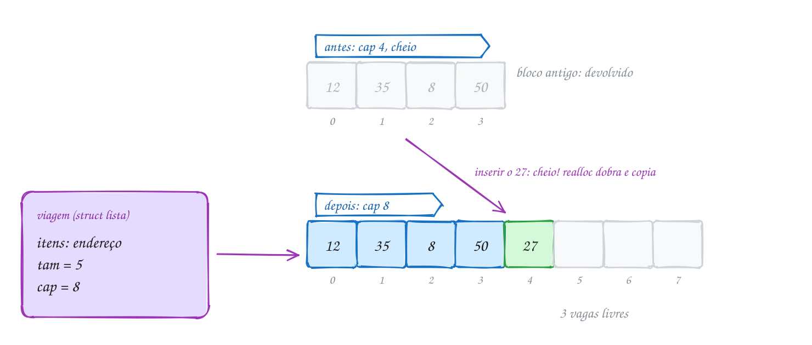
A peça central do lista.c garante espaço antes de cada inserção:
struct lista {
int *itens; // vetor no heap
int tam; // quantos itens estão em uso
int cap; // quantos itens cabem no vetor
};
// garante espaço para mais um item: se encheu, dobra
static bool garante_espaco(Lista *l) {
if (l->tam < l->cap) return true;
int nova_cap = l->cap * 2;
int *novo = realloc(l->itens, nova_cap * sizeof(int));
if (novo == NULL) return false; // l->itens continua valendo
l->itens = novo;
l->cap = nova_cap;
return true;
}
bool lista_insere_fim(Lista *l, int valor) {
if (!garante_espaco(l)) return false;
l->itens[l->tam] = valor;
l->tam++;
return true;
}
Quem usa a lista só enxerga a interface de lista.h:
#include <stdio.h>
#include "lista.h"
int main(void) {
int despesas[] = {12, 35, 8, 50, 27}; // em reais
Lista *viagem = lista_cria(2); // começa com espaço para 2
if (viagem == NULL) return 1;
for (int i = 0; i < 5; i++) {
lista_insere_fim(viagem, despesas[i]);
printf("inseriu %2d: tam %d, cap %d\n", despesas[i],
lista_tamanho(viagem), lista_capacidade(viagem));
}
lista_imprime(viagem);
int total = 0;
for (int i = 0; i < lista_tamanho(viagem); i++) {
int valor;
lista_pega(viagem, i, &valor);
total += valor;
}
printf("total: R$ %d\n", total);
lista_libera(viagem);
return 0;
}
// Saída:
// inseriu 12: tam 1, cap 2
// inseriu 35: tam 2, cap 2
// inseriu 8: tam 3, cap 4
// inseriu 50: tam 4, cap 4
// inseriu 27: tam 5, cap 8
// [12, 35, 8, 50, 27]
// total: R$ 132
"Está cheio?" vem antes de escrever. Para o 27 a resposta é Sim: o vetor
dobra e só então o valor entra em itens[4]:
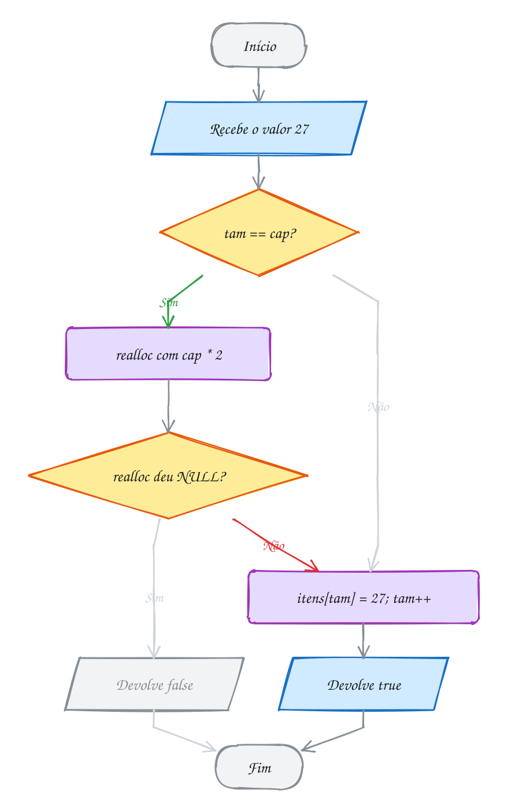
Exemplo A149 · Quantas vezes o vetor mudou de casa
#include <stdio.h>
#include "0075-lista.h"
int main(void) {
// capacidade 0 não existe: lista_cria corrige para 1
Lista *passos = lista_cria(0);
if (passos == NULL) return 1;
printf("criou: tam %d, cap %d\n", lista_tamanho(passos), lista_capacidade(passos));
// 20 dias de passos no app da academia (em milhares)
int crescimentos = 0;
for (int dia = 1; dia <= 20; dia++) {
int cap_antes = lista_capacidade(passos);
if (!lista_insere_fim(passos, 5 + dia % 4)) break;
if (lista_capacidade(passos) != cap_antes) { // houve realloc
crescimentos++;
printf("dia %2d: cap %2d -> %2d\n", dia, cap_antes, lista_capacidade(passos));
}
}
int tam = lista_tamanho(passos);
int cap = lista_capacidade(passos);
printf("%d itens, cap %d, %d vagas livres\n", tam, cap, cap - tam);
printf("realloc: %d vezes\n", crescimentos);
// posição fora da lista: lista_pega recusa e não mexe na variável
int valor = -1;
if (!lista_pega(passos, 20, &valor)) {
printf("posição 20 não existe; valor continua %d\n", valor);
}
lista_libera(passos);
return 0;
}
// Saída:
// criou: tam 0, cap 1
// dia 2: cap 1 -> 2
// dia 3: cap 2 -> 4
// dia 5: cap 4 -> 8
// dia 9: cap 8 -> 16
// dia 17: cap 16 -> 32
// 20 itens, cap 32, 12 vagas livres
// realloc: 5 vezes
// posição 20 não existe; valor continua -1
gcc ~/LPEDC/material/A149.c ~/LPEDC/material/0075-lista.c -o ~/LPEDC/material/A149 && ~/LPEDC/material/A149
Exemplo A150 · Inserir e remover no meio: todo mundo se mexe
#include <stdio.h>
#include "0075-lista.h"
int main(void) {
Lista *viagem = lista_cria(4);
if (viagem == NULL) return 1;
lista_insere_fim(viagem, 12);
lista_insere_fim(viagem, 35);
lista_insere_fim(viagem, 8);
lista_insere_fim(viagem, 50);
lista_imprime(viagem);
// esqueceu o pedágio de R$ 19, que foi a segunda despesa
lista_insere_em(viagem, 1, 19); // 35, 8 e 50 andam uma casa para a direita
lista_imprime(viagem);
// o R$ 8 foi reembolsado: sai da lista
int tirado;
if (lista_remove_em(viagem, 3, &tirado)) { // 50 anda uma casa para a esquerda
printf("removeu R$ %d\n", tirado);
}
lista_imprime(viagem);
// posição que não existe: a lista recusa em vez de estragar a memória
if (!lista_insere_em(viagem, 9, 100)) {
printf("posição 9 não existe (tamanho %d)\n", lista_tamanho(viagem));
}
lista_libera(viagem);
return 0;
}
// Saída:
// [12, 35, 8, 50]
// [12, 19, 35, 8, 50]
// removeu R$ 8
// [12, 19, 35, 50]
// posição 9 não existe (tamanho 4)
gcc ~/LPEDC/material/A150.c ~/LPEDC/material/0075-lista.c -o ~/LPEDC/material/A150 && ~/LPEDC/material/A150
Exercício E445 · ★☆☆
O medidor de glicose da sua mãe registrou estas leituras na semana (mg/dL): 98, 110, 87, 132, 105, 91. Usando só as funções de lista.h, crie uma lista com capacidade inicial 4, insira as leituras no fim, mostre a lista, o tamanho, a capacidade, a média (uma casa decimal) e a maior leitura.
Saída esperada:
[98, 110, 87, 132, 105, 91]
tamanho 6, capacidade 8
média: 103.8
maior: 132
gcc ~/LPEDC/material/E445.c ~/LPEDC/material/0075-lista.c -o ~/LPEDC/material/E445 && ~/LPEDC/material/E445
Exercício E447 · ★★☆
O pluviômetro da escola anota a chuva do dia em mm e grava -1 quando o sensor falha. Usando SÓ a interface de lista.h, guarde as leituras 4, -1, 0, 12, -1, -1, 7 numa lista de capacidade inicial 4 e escreva:
int posicao_de(const Lista *l, int valor) primeira posição do valor, ou -1
int remove_todos(Lista *l, int valor) tira todas as ocorrências e
devolve quantas tirou
Mostre a lista, remova as falhas (-1) e mostre de novo.
Saída esperada:
antes: [4, -1, 0, 12, -1, -1, 7]
depois: [4, 0, 12, 7]
3 falhas removidas
gcc ~/LPEDC/material/E447.c ~/LPEDC/material/0075-lista.c -o ~/LPEDC/material/E447 && ~/LPEDC/material/E447
Exercício E448 · ★★☆
Existem dois jeitos de tirar um item do meio de uma lista sequencial:
deslocando: puxa todos os de depois uma casa para a esquerda (mantém a
ordem; custa O(n))
trocando: copia o ÚLTIMO item para o buraco e diminui o tamanho
(bagunça a ordem; custa O(1))
Escreva as duas funções. Cada uma recebe o vetor, o endereço do tamanho e a posição, e devolve quantos itens precisou mover (trocando move 1, ou 0 quando a posição já é a última). Teste tirando a posição 2 de duas cópias das senhas 101 a 108. Depois, para sentir a diferença de custo, esvazie as duas cópias tirando SEMPRE a posição 0 e mostre o total de movimentos de cada uma:
Saída esperada:
deslocando: [101, 102, 104, 105, 106, 107, 108] movimentos: 5
trocando: [101, 102, 108, 104, 105, 106, 107] movimentos: 1
esvaziando pela frente: deslocando 21, trocando 6
gcc ~/LPEDC/material/E448.c ~/LPEDC/material/0075-lista.c -o ~/LPEDC/material/E448 && ~/LPEDC/material/E448
Exercício E450 · ★★★
Um vetor que só cresce nunca devolve memória. Usando a struct Vet abaixo, escreva vet_empurra (põe no fim; quando tam == cap, dobra a capacidade com realloc) e duas funções que tiram o último item, guardam em *saiu e encolhem o vetor pela metade (nunca abaixo de capacidade 2):
bool vet_tira(Vet *v, int *saiu) encolhe se tam <= cap / 4
bool vet_tira_metade(Vet *v, int *saiu) encolhe se tam <= cap / 2
Some 1 em v->reallocs a cada realloc que der certo. No main: comece com um vetor de cap 2, empurre 1 a 9, esvazie com vet_tira mostrando cada passo; depois crie dois vetores com 1, 2, 3, 4 (tam 4, cap 4, reallocs zerado) e, 10 vezes, empurre 5 e tire, um com cada regra, mostrando os reallocs.
Saída esperada:
empurrou 9: tam 9, cap 16
tirou 9: tam 8, cap 16
tirou 8: tam 7, cap 16
tirou 7: tam 6, cap 16
tirou 6: tam 5, cap 16
tirou 5: tam 4, cap 8
tirou 4: tam 3, cap 8
tirou 3: tam 2, cap 4
tirou 2: tam 1, cap 2
tirou 1: tam 0, cap 2
alternando com 1/2: 20 realloc
alternando com 1/4: 1 realloc
gcc ~/LPEDC/material/E450.c ~/LPEDC/material/0075-lista.c -o ~/LPEDC/material/E450 && ~/LPEDC/material/E450
No extrato do Pix, cada transferência nova aparece no topo, e as antigas
descem. No vetor dinâmico do assunto 0075, pôr um item na posição 0 obriga
todos os outros a andarem uma casa, O(n) a cada Pix. E quando o vetor enche,
o realloc copia tudo. A lista encadeada troca o vetor por peças soltas, e
inserir na frente passa a custar sempre o mesmo, com 4 itens ou com 4
milhões.
Pense numa caça ao tesouro. Cada pista está num lugar diferente da cidade e
traz o endereço da próxima; a última diz "fim". Ninguém precisa que as pistas
fiquem lado a lado, só que cada uma saiba onde está a seguinte. Uma lista
encadeada, que o Cormen chama de lista ligada, guarda cada item num
pedaço separado de memória, o nó. Cada nó traz o valor e o endereço do
próximo nó, e o último aponta para NULL (FEOFILOFF, 2009, cap. 4).
A lista inteira é representada pelo endereço do primeiro nó, o início
(no Cormen, L.head). Com ele você chega a todos os outros, seguindo as
setas. A lista vazia é simplesmente inicio == NULL: não há primeiro nó
(CORMEN et al., 2024, cap. 10).
O nó é uma struct com um detalhe novo: um dos campos aponta para outro nó do mesmo tipo. Uma struct assim se chama struct autorreferenciada:
typedef struct no {
int valor;
struct no *prox; // o próximo nó, ou NULL no último
} No;
Uma struct não pode conter a si mesma, porque teria tamanho infinito: o nó
teria um nó dentro, que teria outro, e assim por diante. Mas pode conter um
ponteiro para a própria struct, porque um ponteiro tem tamanho fixo, 8
bytes em 64 bits, aponte para o que apontar (KERNIGHAN; RITCHIE, 1989). Por
isso o campo é struct no *prox, com o nome completo da struct: dentro das
chaves, o apelido No ainda não existe.
Cada nó vem de um malloc separado e cai onde o heap tiver espaço. Os
endereços ficam fora de ordem, e a ordem da lista está só nas setas. A
consequência é que não existe lista[2]: para chegar ao terceiro nó, você
parte do início e segue duas setas (CELES; RANGEL, 2002). Ler a posição i,
que no vetor era O(1), aqui custa O(i).
Três operações formam a base. Inserir no início cria o nó com malloc,
põe o valor, aponta o prox dele para o antigo início e devolve o novo nó,
que passa a ser o início. São sempre os mesmos passos, sem andar pela lista:
O(1) (CELES; RANGEL, 2002). Quem chama precisa guardar o retorno, com
inicio = lista_insere_inicio(inicio, 20);.
Percorrer usa um ponteiro auxiliar p que começa no início e anda de nó
em nó: for (p = inicio; p != NULL; p = p->prox). Esse é o "for de lista",
que você vai escrever em quase toda função do módulo. A cada volta, p->valor
é o valor do nó atual; quando p vira NULL, a lista acabou (FEOFILOFF,
2009, cap. 4).
Liberar pede um free por nó, porque cada nó veio de um malloc. O
cuidado está na ordem: guarde p->prox numa variável antes de chamar
free(p), porque depois do free o nó não existe mais e ler o campo dele é
ler memória devolvida (CELES; RANGEL, 2002).
Inserir no fim é outra história. Guardando só o início, é preciso andar
até o último nó, O(n). Guardando também um ponteiro para o último, vira O(1);
os assuntos 0079 e 0086 fazem isso. O nó ocupa 16 bytes em 64 bits: 4 do
int, 4 de preenchimento para alinhar o ponteiro e 8 do ponteiro.
[!WARNING]
lista_insere_inicio(inicio, 20);sem oinicio =na frente compila sem aviso e está errado: o novo início se perde e o nó vira vazamento. Nolibera, o erro comum é lerp->proxdepois defree(p).
Chegam quatro Pix: R$ 20, 45, 10 e 80, e o 80 aparece primeiro no extrato. Embaixo, a lista no heap, com endereços fora de ordem:
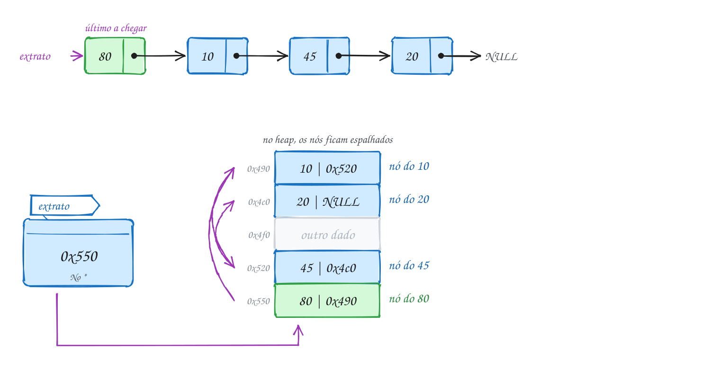
A inserção no início, do lista.c desta pasta:
No *lista_insere_inicio(No *inicio, int valor) {
No *novo = malloc(sizeof(No));
if (novo == NULL) { // num programa pequeno, desistir é o mais honesto
fprintf(stderr, "sem memória\n");
exit(1);
}
novo->valor = valor;
novo->prox = inicio; // o antigo primeiro vira o segundo
return novo; // o novo nó é o novo início
}
E o extrato montado no main:
#include <stdio.h>
#include "lista.h"
int main(void) {
No *extrato = NULL; // lista vazia
// os Pix chegam nesta ordem: 20, 45, 10, 80
extrato = lista_insere_inicio(extrato, 20);
extrato = lista_insere_inicio(extrato, 45);
extrato = lista_insere_inicio(extrato, 10);
extrato = lista_insere_inicio(extrato, 80);
lista_imprime(extrato); // o último a chegar aparece primeiro
int total = 0;
for (No *p = extrato; p != NULL; p = p->prox) { // percorrer: siga os prox
total += p->valor;
}
printf("%d Pix, total R$ %d\n", lista_tamanho(extrato), total);
lista_libera(extrato);
return 0;
}
// Saída:
// 80 -> 10 -> 45 -> 20 -> NULL
// 4 Pix, total R$ 155
O laço pergunta "ainda tem nó?" antes de cada passo; o p vai do 80 ao 20,
vira NULL e o laço para com total R$ 155:
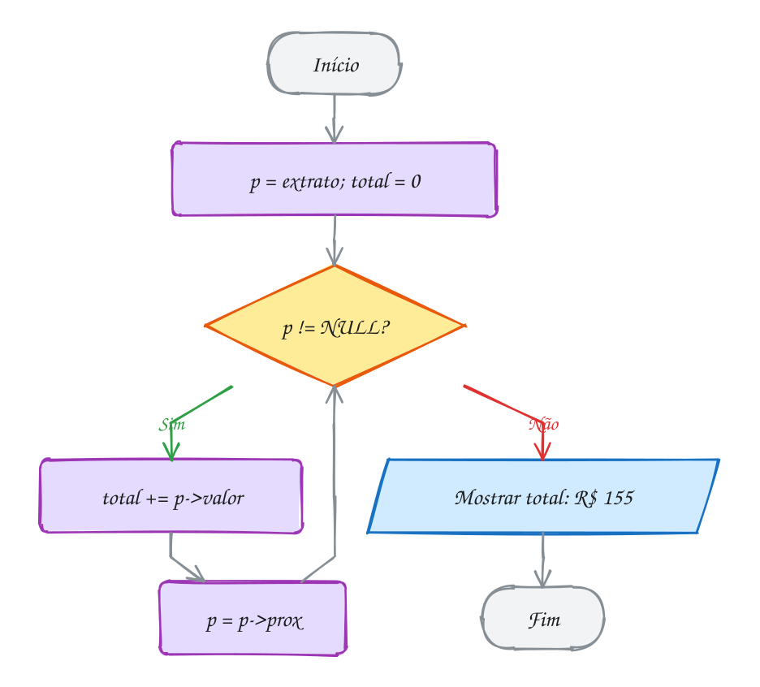
Exemplo A151 · Andando pelas setas: o terceiro nó e a lista vazia
#include <stdio.h>
#include "0076-lista.h"
int main(void) {
// temperaturas da semana em Cuiabá, lidas de segunda a domingo
int temps[] = {31, 34, 29, 36, 33, 28, 35};
No *semana = NULL;
for (int i = 0; i < 7; i++) {
semana = lista_insere_inicio(semana, temps[i]);
}
lista_imprime(semana); // domingo na frente: a ordem saiu invertida
// não existe semana[2]: para chegar no 3º nó, siga duas setas
No *p = semana;
for (int passo = 0; passo < 2 && p != NULL; passo++) {
p = p->prox;
}
if (p != NULL) printf("3º nó: %d (sexta-feira)\n", p->valor);
// percorrer também serve para procurar o maior
int maior = semana->valor;
for (No *q = semana->prox; q != NULL; q = q->prox) {
if (q->valor > maior) maior = q->valor;
}
printf("maior: %d\n", maior);
// a lista vazia não é caso especial: o laço só não roda nenhuma vez
No *vazia = NULL;
printf("vazia tem %d nós: ", lista_tamanho(vazia));
lista_imprime(vazia);
lista_libera(vazia); // não faz nada, e não quebra
lista_libera(semana);
return 0;
}
// Saída:
// 35 -> 28 -> 33 -> 36 -> 29 -> 34 -> 31 -> NULL
// 3º nó: 33 (sexta-feira)
// maior: 36
// vazia tem 0 nós: NULL
gcc ~/LPEDC/material/A151.c ~/LPEDC/material/0076-lista.c -o ~/LPEDC/material/A151 && ~/LPEDC/material/A151
Exemplo A152 · Inserir no fim com um ponteiro para o último
#include <stdio.h>
#include <stdlib.h>
#include "0076-lista.h"
// põe "valor" depois do último nó; *inicio e *fim mudam quando precisa
static void insere_no_fim(No **inicio, No **fim, int valor) {
No *novo = malloc(sizeof(No));
if (novo == NULL) exit(1);
novo->valor = valor;
novo->prox = NULL; // ele vai ser o último
if (*inicio == NULL) { // lista vazia: é o primeiro e o último
*inicio = novo;
} else {
(*fim)->prox = novo; // o antigo último aponta para ele
}
*fim = novo;
}
int main(void) {
No *inicio = NULL;
No *fim = NULL;
insere_no_fim(&inicio, &fim, 20);
insere_no_fim(&inicio, &fim, 45);
insere_no_fim(&inicio, &fim, 10);
insere_no_fim(&inicio, &fim, 80);
lista_imprime(inicio); // agora na ordem de chegada
printf("primeiro: %d, último: %d\n", inicio->valor, fim->valor);
lista_libera(inicio);
return 0;
}
// Saída:
// 20 -> 45 -> 10 -> 80 -> NULL
// primeiro: 20, último: 80
gcc ~/LPEDC/material/A152.c ~/LPEDC/material/0076-lista.c -o ~/LPEDC/material/A152 && ~/LPEDC/material/A152
Exercício E451 · ★☆☆
O app do banco quer destacar os Pix "grandes". Monte o extrato inserindo no início os Pix 30, 75, 12, 50, 120 e 64 (nesta ordem), mostre a lista e escreva a função
int conta_maiores(const No *inicio, int limite)
que devolve quantos valores são MAIORES que o limite. Use limite 50.
Saída esperada:
64 -> 120 -> 50 -> 12 -> 75 -> 30 -> NULL
3 Pix acima de R$ 50
gcc ~/LPEDC/material/E451.c ~/LPEDC/material/0076-lista.c -o ~/LPEDC/material/E451 && ~/LPEDC/material/E451
Exercício E453 · ★★☆
Os preços do hortifruti chegaram num vetor: {5, 18, 7, 22, 9}. Escreva:
No *vetor_para_lista(const int v[], int n)
monta a lista NA MESMA ORDEM do vetor, usando só lista_insere_inicio
int lista_para_vetor(const No *inicio, int v[], int max)
copia a lista para o vetor (no máximo max itens) e devolve quantos
copiou
Teste indo e voltando:
Saída esperada:
lista: 5 -> 18 -> 7 -> 22 -> 9 -> NULL
vetor: 5 18 7 22 9
gcc ~/LPEDC/material/E453.c ~/LPEDC/material/0076-lista.c -o ~/LPEDC/material/E453 && ~/LPEDC/material/E453
Exercício E454 · ★★☆
Uma lista é NULL ou um nó seguido de outra lista. Essa definição é recursiva, e as funções também podem ser. O extrato recebeu os Pix 15, 60, 35, 90 e 25, inseridos no início. Escreva, SEM laço nenhum:
void imprime_ao_contrario(const No *p) do mais antigo para o mais novo
int tamanho_rec(const No *p) quantos nós
Saída esperada:
mais novo primeiro: 25 -> 90 -> 35 -> 60 -> 15 -> NULL
mais antigo primeiro: 15 60 35 90 25
tamanho (recursivo): 5
gcc ~/LPEDC/material/E454.c ~/LPEDC/material/0076-lista.c -o ~/LPEDC/material/E454 && ~/LPEDC/material/E454
Exercício E456 · ★★★
A fila de embarque foi montada ao contrário: 5 -> 4 -> 3 -> 2 -> 1 (monte inserindo no início 1, 2, 3, 4 e 5). Escreva No *inverte(No *inicio), que inverte a lista SÓ MEXENDO NOS PONTEIROS: nada de malloc, nada de trocar os valores, nada de vetor auxiliar. Ela devolve o novo início. Mostre a fila antes e depois e teste também com a lista vazia e com uma lista de um nó só (o valor 7).
Saída esperada:
antes: 5 -> 4 -> 3 -> 2 -> 1 -> NULL
depois: 1 -> 2 -> 3 -> 4 -> 5 -> NULL
vazia: NULL
um só: 7 -> NULL
gcc ~/LPEDC/material/E456.c ~/LPEDC/material/0076-lista.c -o ~/LPEDC/material/E456 && ~/LPEDC/material/E456
O assunto 0076 sabe criar, percorrer e liberar uma lista encadeada. Falta achar um item e tirá-lo do meio sem desmontar o resto. No vetor, remover do meio obrigava a deslocar os seguintes. Na lista, ninguém se move: basta trocar uma seta. O trabalho está em descobrir qual seta trocar.
Na barbearia, as senhas esperam numa lista: 31, 17, 42, 8. O cliente da senha 42 desiste e vai embora. Os outros não mudam de cadeira; só o 17 passa a ter o 8 como próximo a ser chamado. É exatamente o que a remoção numa lista encadeada faz.
Buscar é percorrer a lista até achar o valor, comparando nó por nó, e
custa O(n) no pior caso. A função de busca devolve o endereço do nó que
tem o valor, ou NULL se a lista acabou sem achar. Com o endereço em mãos,
você lê o valor ou o altera direto no nó (FEOFILOFF, 2009, cap. 4):
No *p = inicio;
while (p != NULL && p->valor != valor) { // o teste do NULL vem primeiro
p = p->prox;
}
// aqui p é o nó com o valor, ou NULL se não achou
Remover o nó p exige que o nó anterior passe a apontar para o nó
seguinte, pulando o p. O problema é que a lista simples só tem setas para
a frente: parado no p, você não tem como voltar ao anterior. A saída é
percorrer com dois ponteiros, ant e p, em que ant anda sempre um
passo atrás. Antes de avançar p, você faz ant = p; assim, quando p
para no nó procurado, ant está no nó de antes (CELES; RANGEL, 2002).
Achado o nó, há dois casos, e a diferença está em ant (CELES; RANGEL,
2002). Se ant ainda vale NULL, o laço nem andou: o nó é o primeiro da
lista, e quem precisa mudar é o próprio início, que passa a ser p->prox. Se
ant não é NULL, o nó está no meio ou no fim, e ant->prox = p->prox faz
o anterior pular o p. Nos dois casos, o free(p) vem depois de religar,
porque é preciso ler p->prox antes de devolver o nó.
O primeiro caso traz uma complicação. Remover o primeiro nó muda a variável
inicio de quem chamou, e a função recebe só uma cópia dela. A inserção do
assunto 0076 resolvia isso devolvendo o início novo. A remoção usa o outro
estilo comum: recebe o endereço do início, No **inicio, como no
assunto 0049, e escreve *inicio = p->prox para mudar a variável do main
(FEOFILOFF, 2009, cap. 4). Quem chama passa &fila.
O caso especial do primeiro nó existe porque o primeiro é o único sem
anterior. Um truque o elimina: pôr no começo um nó-cabeça, um nó de
mentira que não guarda dado nenhum e nunca sai. Com ele, todo nó de verdade
tem um anterior, e a remoção vira um caso só. O Cormen usa a mesma ideia com
o nome de sentinela, L.nil (CORMEN et al., 2024, cap. 10). O exemplo
A154 mostra o nó-cabeça, e o assunto 0174 volta à sentinela.
Há ainda um terceiro jeito, sem ant. Um ponteiro No **pp que aponta para
"quem aponta para o nó atual" começa em inicio e anda com
pp = &(*pp)->prox. Achado o nó, No *p = *pp; *pp = p->prox; free(p);
resolve o primeiro nó e os do meio com o mesmo código, sem if.
Quanto ao custo, religar as setas é O(1), não importa o tamanho da lista. O que custa é achar o nó, O(n) no pior caso (FEOFILOFF, 2009, cap. 4). Se você já tem o anterior em mãos, remover sai de graça.
[!WARNING] A ordem do
&&importa. Emwhile (p->valor != valor && p != NULL), op->valoré lido antes de testarpe quebra quando o valor não está na lista. Comp != NULLprimeiro, o curto-circuito (assunto 0013) evita a leitura.
Na barbearia, as senhas 31, 17, 42 e 8 esperam numa lista. O 42 desiste: o
laço para com p no 42 e ant no 17, a seta do 17 passa a apontar para o 8
e o nó do 42 volta para o heap:
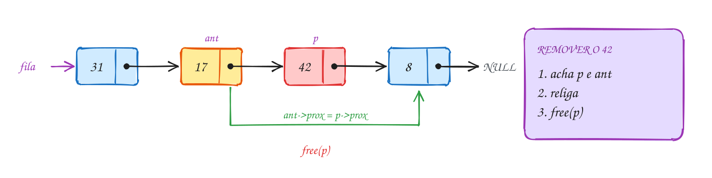
A busca e a remoção do lista.c:
No *lista_busca(No *inicio, int valor) {
No *p = inicio;
while (p != NULL && p->valor != valor) { // o teste do NULL vem primeiro
p = p->prox;
}
return p; // o nó, ou NULL se a lista acabou
}
bool lista_remove(No **inicio, int valor) {
No *ant = NULL; // sempre um passo atrás de p
No *p = *inicio;
while (p != NULL && p->valor != valor) {
ant = p;
p = p->prox;
}
if (p == NULL) return false; // não achou
if (ant == NULL) {
*inicio = p->prox; // era o primeiro: o início anda
} else {
ant->prox = p->prox; // o anterior pula o p
}
free(p);
return true;
}
E a fila da barbearia:
#include <stdio.h>
#include "lista.h"
int main(void) {
No *fila = NULL;
fila = lista_insere_inicio(fila, 8);
fila = lista_insere_inicio(fila, 42);
fila = lista_insere_inicio(fila, 17);
fila = lista_insere_inicio(fila, 31);
lista_imprime(fila);
// a senha 42 ainda está esperando?
No *achou = lista_busca(fila, 42);
if (achou != NULL) printf("senha %d: na fila\n", achou->valor);
// o 42 desistiu: sai do meio
lista_remove(&fila, 42);
lista_imprime(fila);
// o 31 foi atendido: sai do começo (o início muda)
lista_remove(&fila, 31);
lista_imprime(fila);
// o 99 nunca esteve na fila
if (!lista_remove(&fila, 99)) printf("senha 99: não está na fila\n");
lista_libera(fila);
return 0;
}
// Saída:
// 31 -> 17 -> 42 -> 8 -> NULL
// senha 42: na fila
// 31 -> 17 -> 8 -> NULL
// 17 -> 8 -> NULL
// senha 99: não está na fila
Na saída do 42, ant é o 17 (não NULL) e o caminho vai por ant->prox = p->prox; na saída do 31, iria por início = p->prox:
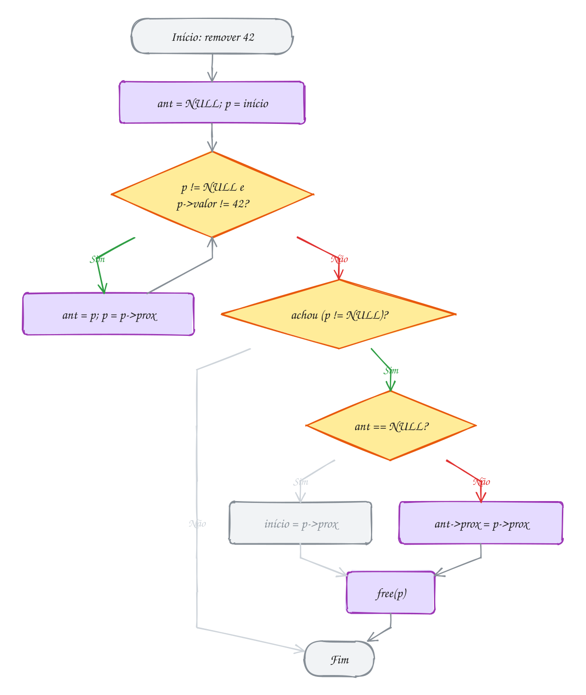
Exemplo A153 · Buscar por condição e tirar o último
#include <stdio.h>
#include "0077-lista.h"
// variação da busca: em vez de "igual a", o primeiro nó "acima de" limite
static No *busca_acima(No *inicio, int limite) {
No *p = inicio;
while (p != NULL && p->valor <= limite) {
p = p->prox;
}
return p; // o nó, ou NULL se ninguém passou do limite
}
int main(void) {
// contas do mês, em reais
No *contas = NULL;
contas = lista_insere_inicio(contas, 480);
contas = lista_insere_inicio(contas, 99);
contas = lista_insere_inicio(contas, 135);
contas = lista_insere_inicio(contas, 62);
lista_imprime(contas);
No *cara = busca_acima(contas, 100);
if (cara != NULL) printf("primeira acima de R$ 100: %d\n", cara->valor);
if (busca_acima(contas, 500) == NULL) printf("nenhuma acima de R$ 500\n");
// tirar o ÚLTIMO: o anterior dele (99) passa a apontar para NULL
lista_remove(&contas, 480);
lista_imprime(contas);
// tirar até sobrar um nó e depois o único: o início vira NULL
lista_remove(&contas, 135);
lista_remove(&contas, 62);
lista_imprime(contas);
lista_remove(&contas, 99);
lista_imprime(contas);
// na lista vazia, buscar e remover só devolvem "não achei"
if (lista_busca(contas, 62) == NULL && !lista_remove(&contas, 62)) {
printf("lista vazia: nada para buscar nem tirar\n");
}
lista_libera(contas);
return 0;
}
// Saída:
// 62 -> 135 -> 99 -> 480 -> NULL
// primeira acima de R$ 100: 135
// nenhuma acima de R$ 500
// 62 -> 135 -> 99 -> NULL
// 99 -> NULL
// NULL
// lista vazia: nada para buscar nem tirar
gcc ~/LPEDC/material/A153.c ~/LPEDC/material/0077-lista.c -o ~/LPEDC/material/A153 && ~/LPEDC/material/A153
Exemplo A154 · Nó-cabeça: a remoção sem caso especial
#include <stdio.h>
#include <stdlib.h>
#include "0077-lista.h"
// Com um nó-cabeça (um nó "de mentira" no começo, cujo valor ninguém lê),
// todo nó de verdade tem um anterior. O primeiro não é mais especial.
static void cab_insere(No *cabeca, int valor) {
No *novo = malloc(sizeof(No));
if (novo == NULL) exit(1);
novo->valor = valor;
novo->prox = cabeca->prox; // entra logo depois da cabeça
cabeca->prox = novo;
}
static int cab_remove(No *cabeca, int valor) {
No *ant = cabeca; // nunca é NULL
No *p = cabeca->prox;
while (p != NULL && p->valor != valor) {
ant = p;
p = p->prox;
}
if (p == NULL) return 0;
ant->prox = p->prox; // um caso só: vale até para o primeiro
free(p);
return 1;
}
int main(void) {
No cabeca = {0, NULL}; // a cabeça pode até morar na pilha
cab_insere(&cabeca, 8);
cab_insere(&cabeca, 42);
cab_insere(&cabeca, 17);
cab_insere(&cabeca, 31);
lista_imprime(cabeca.prox); // a lista de verdade começa depois da cabeça
cab_remove(&cabeca, 31); // o primeiro: nenhum if especial
cab_remove(&cabeca, 8); // o último
lista_imprime(cabeca.prox);
lista_libera(cabeca.prox); // a cabeça não veio do malloc: não leva free
return 0;
}
// Saída:
// 31 -> 17 -> 42 -> 8 -> NULL
// 17 -> 42 -> NULL
gcc ~/LPEDC/material/A154.c ~/LPEDC/material/0077-lista.c -o ~/LPEDC/material/A154 && ~/LPEDC/material/A154
Exercício E457 · ★☆☆
A fila do açougue tem as senhas 33 -> 40 -> 7 -> 25 -> 12 (monte inserindo no início 12, 25, 7, 40 e 33). Escreva int posicao(const No *inicio, int valor), que devolve a posição do valor contando a partir de 1, ou 0 se ele não está na lista. O programa lê duas senhas do teclado (sem mostrar perguntas), confere o retorno do scanf e responde sobre cada uma.
Entrada:
7
50
Saída esperada:
senha 7 está na posição 3
senha 50 não está na fila
gcc ~/LPEDC/material/E457.c ~/LPEDC/material/0077-lista.c -o ~/LPEDC/material/E457 && ~/LPEDC/material/E457
Exercício E459 · ★★☆
O sensor de temperatura da estufa grava 0 quando falha. Escreva int remove_todos(No **inicio, int valor), que tira TODOS os nós com o valor numa passada só (sem chamar lista_remove em laço) e devolve quantos tirou. No main, monte a lista com as leituras 0, 19, 0, 21, 0, 0 inseridas no início, mostre antes e depois da remoção dos 0 e o total removido. Depois monte uma lista só com dois 0, remova-os e mostre que ela ficou vazia (imprima "só falhas: NULL (2 removidas)" com o total devolvido pela função).
Saída esperada:
antes: 0 -> 0 -> 21 -> 0 -> 19 -> 0 -> NULL
depois: 21 -> 19 -> NULL
4 leituras removidas
só falhas: NULL (2 removidas)
gcc ~/LPEDC/material/E459.c ~/LPEDC/material/0077-lista.c -o ~/LPEDC/material/E459 && ~/LPEDC/material/E459
Exercício E460 · ★★☆
Num leilão online, a cada rodada o MENOR lance sai da disputa. Os lances estão numa lista de structs Lance (declarada abaixo). Escreva
Lance *lance_insere(Lance *inicio, const char *nome, int valor) no início
void lance_imprime(const Lance *inicio) formato do exemplo
void lance_libera(Lance *inicio)
bool remove_menor(Lance **inicio, Lance *saiu)
remove_menor acha o nó de menor valor, copia os dados dele para *saiu, tira o nó da lista e devolve true (ou false se a lista estiver vazia). Insira Ana 150, Bruno 90, Carla 210 e Davi 175 (nesta ordem), mostre a lista e rode duas rodadas.
Saída esperada:
Davi R$ 175 -> Carla R$ 210 -> Bruno R$ 90 -> Ana R$ 150 -> NULL
saiu Bruno (R$ 90)
Davi R$ 175 -> Carla R$ 210 -> Ana R$ 150 -> NULL
saiu Ana (R$ 150)
Davi R$ 175 -> Carla R$ 210 -> NULL
gcc ~/LPEDC/material/E460.c ~/LPEDC/material/0077-lista.c -o ~/LPEDC/material/E460 && ~/LPEDC/material/E460
Exercício E462 · ★★★
O vagão do MEIO do trem precisa ir para a manutenção, e você só pode percorrer a lista UMA vez (sem contar os nós antes). Escreva bool remove_meio(No **inicio), com dois ponteiros que saem do início: um anda um nó por vez e o outro anda dois. Com quantidade par, o meio é o SEGUNDO dos dois do centro. No main, monte a lista 1 a 7, a lista 10, 20, 30, 40, 50, 60 e a lista de um nó só (99), inserindo no início; remova o meio de cada uma e imprima as três.
Saída esperada:
1 -> 2 -> 3 -> 5 -> 6 -> 7 -> NULL
10 -> 20 -> 30 -> 50 -> 60 -> NULL
NULL
gcc ~/LPEDC/material/E462.c ~/LPEDC/material/0077-lista.c -o ~/LPEDC/material/E462 && ~/LPEDC/material/E462
Na clínica, as ligações chegam fora de ordem: primeiro alguém marca 14:30, depois 09:00, depois 16:00. Mas a recepcionista precisa da agenda sempre em ordem de horário, a qualquer momento do dia. Juntar tudo e ordenar no fim não serve, porque a agenda é consultada o tempo todo. O jeito é cada marcação entrar já no lugar certo.
É o que você faz com cartas na mão durante um jogo: cada carta nova vai direto para a posição dela, entre a menor e a maior que ela, e a mão continua arrumada. Uma lista ordenada mantém os nós em ordem a cada inserção, em vez de reordenar tudo depois (CELES; RANGEL, 2002). Numa lista encadeada, isso é barato na hora de encaixar: nenhum nó se move, só duas setas mudam.
A inserção ordenada reaproveita o par ant/p do assunto 0077. Os dois
andam pela lista enquanto os valores encontrados forem menores que o novo.
Quando o laço para, p é o primeiro nó com valor maior ou igual ao novo, ou
NULL se a lista acabou, e ant é o nó logo antes dele (FEOFILOFF, 2009,
cap. 4). O novo nó entra entre ant e p. Na agenda com 09:00, 14:30 e
16:00, a ligação das 10:15 faz o laço passar pelo 09:00 e parar no 14:30,
porque 14:30 < 10:15 é falso: ant fica no 09:00, p no 14:30.
Para encaixar o novo, religue duas setas, nesta ordem: primeiro
novo->prox = p, depois ant->prox = novo (CELES; RANGEL, 2002). A ordem
importa. O novo nó aponta para o seguinte enquanto o anterior ainda segura a
lista inteira; só então o anterior passa a apontar para o novo.
while (p != NULL && p->valor < valor) { // anda enquanto os de lá são menores
ant = p;
p = p->prox;
}
novo->prox = p; // o novo aponta para o primeiro maior (ou NULL)
if (ant == NULL) {
return novo; // é o menor de todos: vira o início
}
ant->prox = novo; // o anterior passa a apontar para o novo
return inicio;
Dois extremos merecem atenção. Se o novo é menor que todos, o laço nem anda e
ant continua NULL: não há anterior, e o novo vira o início. O fim, ao
contrário, não é caso especial. Se o novo é maior que todos, p chega a
NULL, e novo->prox = p grava NULL no novo, que vira o último do jeito
certo (CELES; RANGEL, 2002).
A ordem também ajuda a busca. Numa lista sem ordem, para concluir que um valor não está lá, você olha todos os nós. Numa lista ordenada, dá para desistir assim que passar do valor procurado (FEOFILOFF, 2009, cap. 4). Procurando 11:00, a busca para no 14:30: dali em diante, só há horários maiores.
O critério da ordem mora todo na comparação do while. Trocando
p->valor < valor por strcmp(p->nome, nome) < 0, a mesma inserção ordena
por nome em ordem alfabética. A comparação também decide o que acontece com
valores repetidos: com <, o repetido entra antes dos iguais; com <=,
depois deles.
Quanto ao custo, cada inserção anda até o lugar certo, O(n) no pior caso, e montar uma lista com n itens custa O(n²). A busca, mesmo com parada antecipada, continua O(n): sem acesso direto ao meio, não dá para fazer busca binária (ZIVIANI, 2010, cap. 3). O vetor ordenado tem o perfil oposto, e a tabela compara os dois:
| Estrutura ordenada | Busca | Inserção |
|---|---|---|
| lista encadeada | O(n) | O(n) para achar, O(1) para religar |
| vetor | O(log n) | O(n): desloca os seguintes |
[!WARNING] O caso mais esquecido é o novo menor que todos:
antficaNULLeant->prox = novosem oifderruba o programa. Teste início, meio e fim. Com<, um repetido entra antes dos iguais; com<=, depois.
A agenda de uma clínica tem 09:00, 14:30 e 16:00 quando chega a ligação das 10:15. O laço passa pelo 09:00 e para no 14:30; o novo aponta para o 14:30 e o 09:00 aponta para ele:
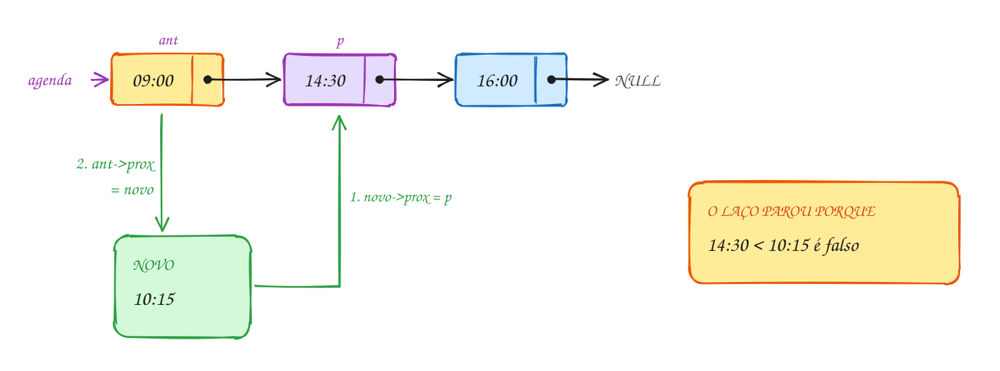
No *lista_insere_ordenado(No *inicio, int valor) {
No *novo = cria_no(valor);
No *ant = NULL;
No *p = inicio;
while (p != NULL && p->valor < valor) { // anda enquanto os de lá são menores
ant = p;
p = p->prox;
}
novo->prox = p; // o novo aponta para o primeiro maior (ou NULL)
if (ant == NULL) {
return novo; // é o menor de todos: vira o início
}
ant->prox = novo; // o anterior passa a apontar para o novo
return inicio;
}
O horário é um int hhmm (1430 é 14:30):
#include <stdio.h>
#include "lista.h"
// cada horário é um int hhmm: 1430 quer dizer 14:30
static void mostra_agenda(const No *inicio) {
for (const No *p = inicio; p != NULL; p = p->prox) {
printf("%02d:%02d -> ", p->valor / 100, p->valor % 100);
}
printf("fim do dia\n");
}
int main(void) {
No *agenda = NULL;
int marcacoes[] = {1430, 900, 1600, 1015}; // na ordem em que ligaram
for (int i = 0; i < 4; i++) {
agenda = lista_insere_ordenado(agenda, marcacoes[i]);
mostra_agenda(agenda);
}
// 11:00 está livre? A busca para no 14:30, sem olhar o resto
if (lista_busca_ordenada(agenda, 1100) == NULL) printf("11:00 livre\n");
lista_libera(agenda);
return 0;
}
// Saída:
// 14:30 -> fim do dia
// 09:00 -> 14:30 -> fim do dia
// 09:00 -> 14:30 -> 16:00 -> fim do dia
// 09:00 -> 10:15 -> 14:30 -> 16:00 -> fim do dia
// 11:00 livre
Para as 10:15, o laço roda uma vez, ant é o 09:00 e o caminho termina em
ant->prox = novo; para as 9:00, ant == NULL e o novo vira o início:
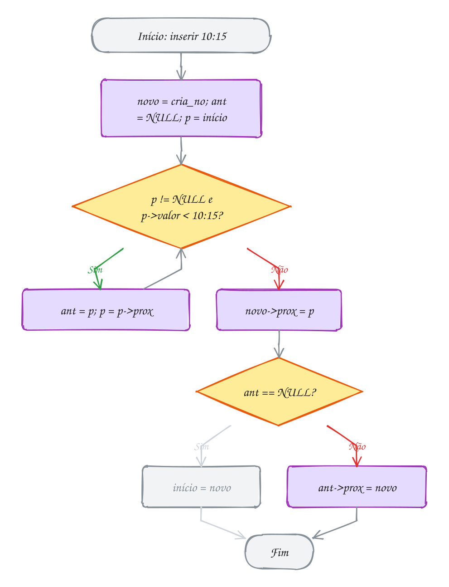
Exemplo A155 · Tabela do campeonato: maior primeiro
#include <stdio.h>
#include <stdlib.h>
#include "0078-lista.h"
// mesma inserção ordenada, com o critério virado: anda enquanto os de lá
// têm MAIS pontos. Em caso de empate, quem chega fica atrás (>=)
static No *insere_decrescente(No *inicio, int pontos) {
No *novo = malloc(sizeof(No));
if (novo == NULL) exit(1);
novo->valor = pontos;
No *ant = NULL;
No *p = inicio;
while (p != NULL && p->valor >= pontos) {
ant = p;
p = p->prox;
}
novo->prox = p;
if (ant == NULL) return novo;
ant->prox = novo;
return inicio;
}
int main(void) {
No *tabela = NULL;
tabela = insere_decrescente(tabela, 40); // lista vazia
tabela = insere_decrescente(tabela, 52); // maior de todos: vira o início
tabela = insere_decrescente(tabela, 31); // menor de todos: vai para o fim
tabela = insere_decrescente(tabela, 45); // cai no meio
lista_imprime(tabela);
tabela = insere_decrescente(tabela, 40); // empate: entra DEPOIS do outro 40
lista_imprime(tabela);
// líder e lanterna saem de graça das pontas
No *ultimo = tabela;
while (ultimo->prox != NULL) ultimo = ultimo->prox;
printf("líder: %d pontos, lanterna: %d pontos\n", tabela->valor, ultimo->valor);
// as funções do lista.h supõem ordem CRESCENTE: não use a busca
// ordenada aqui, ela desistiria logo no 52
if (lista_busca_ordenada(tabela, 45) == NULL) {
printf("busca crescente numa lista decrescente: não achou o 45\n");
}
lista_libera(tabela);
return 0;
}
// Saída:
// 52 -> 45 -> 40 -> 31 -> NULL
// 52 -> 45 -> 40 -> 40 -> 31 -> NULL
// líder: 52 pontos, lanterna: 31 pontos
// busca crescente numa lista decrescente: não achou o 45
gcc ~/LPEDC/material/A155.c ~/LPEDC/material/0078-lista.c -o ~/LPEDC/material/A155 && ~/LPEDC/material/A155
Exemplo A156 · A chamada da turma em ordem alfabética
#include <stdio.h>
#include <stdlib.h>
#include <string.h>
// mesma ideia com strings: o critério de ordem vira strcmp
typedef struct aluno {
char nome[20];
struct aluno *prox;
} Aluno;
static Aluno *insere_nome(Aluno *inicio, const char *nome) {
Aluno *novo = malloc(sizeof(Aluno));
if (novo == NULL) exit(1);
snprintf(novo->nome, sizeof novo->nome, "%s", nome);
Aluno *ant = NULL;
Aluno *p = inicio;
while (p != NULL && strcmp(p->nome, nome) < 0) { // p vem antes no alfabeto
ant = p;
p = p->prox;
}
novo->prox = p;
if (ant == NULL) return novo;
ant->prox = novo;
return inicio;
}
int main(void) {
const char *matriculas[] = {"Renata", "Caio", "Yara", "Bruna", "Igor"};
Aluno *turma = NULL;
for (int i = 0; i < 5; i++) turma = insere_nome(turma, matriculas[i]);
int numero = 1;
for (Aluno *p = turma; p != NULL; p = p->prox) {
printf("%d. %s\n", numero++, p->nome);
}
while (turma != NULL) { // libera
Aluno *seguinte = turma->prox;
free(turma);
turma = seguinte;
}
return 0;
}
// Saída:
// 1. Bruna
// 2. Caio
// 3. Igor
// 4. Renata
// 5. Yara
gcc ~/LPEDC/material/A156.c ~/LPEDC/material/0078-lista.c -o ~/LPEDC/material/A156 && ~/LPEDC/material/A156
Exercício E463 · ★☆☆
As notas do simulado saíram nesta ordem: 7, 3, 9, 5, 10, 1. Insira todas com lista_insere_ordenado, mostre a lista e depois a menor e a maior nota.
Saída esperada:
1 -> 3 -> 5 -> 7 -> 9 -> 10 -> NULL
menor: 1, maior: 10
gcc ~/LPEDC/material/E463.c ~/LPEDC/material/0078-lista.c -o ~/LPEDC/material/E463 && ~/LPEDC/material/E463
Exercício E465 · ★★☆
O entregador anotou os números das casas da rua, com repetidos: 5, 3, 5, 8, 3, 3, 1. Insira tudo em ordem e escreva
int remove_repetidos(No *inicio)
que deixa um só de cada número e devolve quantos nós tirou.
Saída esperada:
antes: 1 -> 3 -> 3 -> 3 -> 5 -> 5 -> 8 -> NULL
depois: 1 -> 3 -> 5 -> 8 -> NULL
3 repetidos removidos
gcc ~/LPEDC/material/E465.c ~/LPEDC/material/0078-lista.c -o ~/LPEDC/material/E465 && ~/LPEDC/material/E465
Exercício E466 · ★★☆
Duas linhas de ônibus saem do mesmo terminal. Os horários de cada uma (em minutos depois das 6h) estão em listas crescentes:
linha 101: 0 -> 25 -> 50 -> 75
linha 202: 10 -> 25 -> 40 -> 90
Monte as duas com lista_insere_ordenado (entrando fora de ordem) e escreva No *intercala(No *a, No *b), que junta as duas numa lista só, também crescente, SEM criar nenhum nó novo: só religando os que existem. Mostre o resultado.
Saída esperada:
0 -> 10 -> 25 -> 25 -> 40 -> 50 -> 75 -> 90 -> NULL
gcc ~/LPEDC/material/E466.c ~/LPEDC/material/0078-lista.c -o ~/LPEDC/material/E466 && ~/LPEDC/material/E466
Exercício E468 · ★★★
Os pedidos do delivery chegaram fora de ordem: 3 -> 7 -> 1 -> 9 -> 4 (monte inserindo no início 4, 9, 1, 7 e 3). Escreva No *ordena(No *inicio, int *passos), que deixa a lista em ordem crescente pelo método da inserção, SÓ RELIGANDO os nós: nada de malloc, nada de free, nada de trocar valores entre nós. Para medir o custo, some 1 em *passos cada vez que o laço de encaixe anda um nó. Mostre antes, depois e os passos para a lista dos pedidos e para o pior caso, uma lista que já chega crescente 1 a 5.
Saída esperada:
antes: 3 -> 7 -> 1 -> 9 -> 4 -> NULL
depois: 1 -> 3 -> 4 -> 7 -> 9 -> NULL (6 passos)
antes: 1 -> 2 -> 3 -> 4 -> 5 -> NULL
depois: 1 -> 2 -> 3 -> 4 -> 5 -> NULL (10 passos)
gcc ~/LPEDC/material/E468.c ~/LPEDC/material/0078-lista.c -o ~/LPEDC/material/E468 && ~/LPEDC/material/E468
A lista simples dos assuntos anteriores só anda para a frente. Isso cobra dois preços (CELES; RANGEL, 2002). Para mostrar os itens de trás para frente, não há caminho de volta. E para remover um nó que você já tem em mãos, ainda é preciso achar o anterior dele, percorrendo a lista desde o início, O(n), porque só o anterior pode ser religado.
No pátio da ferrovia, o terceiro vagão de um trem de minério está com o
freio travado. O manobrista solta os dois engates dele e liga o segundo vagão
direto ao quarto. Ele não volta à locomotiva para descobrir quem vem antes:
cada vagão está preso ao da frente e ao de trás, e ele vê os dois. A lista
duplamente encadeada (no Cormen, duplamente ligada, com os campos
next e prev) faz o mesmo: cada nó guarda o próximo, prox, e também o
anterior, ant (CORMEN et al., 2024, cap. 10).
Com a seta a mais, três coisas ficam possíveis (TENENBAUM; LANGSAM;
AUGENSTEIN, 1995, cap. 4). Você anda nos dois sentidos: de trás para a
frente é o "for de lista" de sempre, começando no último nó e andando com
p = p->ant. Você remove um nó conhecendo só ele, em O(1), porque o
anterior está em p->ant. E, guardando um ponteiro para o último nó,
inserir no fim também vira O(1), sem percorrer nada.
A lista desta pasta junta essas peças numa struct com as duas pontas e o tamanho:
typedef struct no {
int valor;
struct no *ant; // o anterior, ou NULL no primeiro
struct no *prox; // o próximo, ou NULL no último
} No;
typedef struct {
No *inicio;
No *fim;
int tamanho;
} Lista;
Repare que agora a lista não é mais só um ponteiro para o primeiro nó. A
struct Lista carrega o inicio, o fim e quantos nós existem, e as
funções recebem Lista * para poder atualizar os três.
As setas de ida e as de volta precisam concordar. Para todo nó p que não é
o último, vale p->prox->ant == p: o anterior do meu próximo sou eu. Essa
regra é o invariante da lista dupla, e ela tem uma consequência prática: as
setas mudam sempre aos pares. Toda operação que mexe na seta de ida de um
nó precisa mexer na seta de volta correspondente (FEOFILOFF, 2009, cap. 4).
Remover um nó p mostra isso. Chegam duas setas em p: a do anterior, que
aponta para ele pela frente, e a do seguinte, que aponta para ele por trás.
As duas precisam ser desviadas, e cada uma tem o seu caso de borda (CELES;
RANGEL, 2002):
if (p->ant == NULL) l->inicio = p->prox; // era o primeiro
else p->ant->prox = p->prox; // o anterior pula o p
if (p->prox == NULL) l->fim = p->ant; // era o último
else p->prox->ant = p->ant; // o seguinte pula o p para trás
free(p);
Se p é o primeiro, não há anterior para religar, e quem muda é o
inicio. Se p é o último, não há seguinte, e quem muda é o fim. Um nó
do meio passa pelos dois else. Um nó sozinho na lista passa pelos dois
if, e a lista fica vazia, com inicio e fim em NULL.
A seta a mais tem um preço em memória. Em 64 bits, sizeof(No) passa de 16
para 24 bytes: 4 do int, 4 de preenchimento e dois ponteiros de 8. São 50%
a mais por nó, o custo de poder voltar e de remover em O(1).
[!WARNING] Com uma seta faltando, a lista dupla parece certa: se a inserção esquecer o
ant, só a volta sai errada. Imprima nos dois sentidos. Na remoção,p->ant->proxno primeiro nó acessaNULL, e esquecer ofimo deixa apontando para memória liberada.
Um trem de minério tem vagões de 98, 105, 87 e 110 toneladas, e o de 87 está
com o freio travado. Com p nele, o 105 passa a apontar para o 110, e o 110
aponta de volta para o 105:
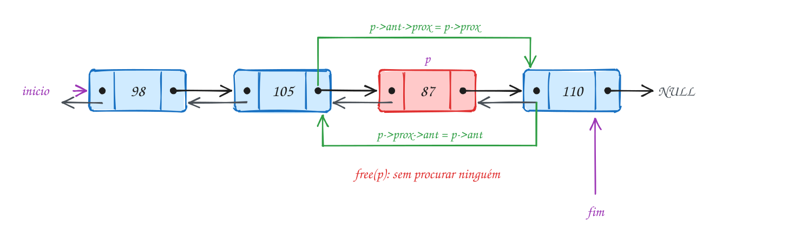
A remoção, sem procurar o anterior:
void lista_remove_no(Lista *l, No *p) {
if (p->ant == NULL) l->inicio = p->prox; // era o primeiro
else p->ant->prox = p->prox; // o anterior pula o p
if (p->prox == NULL) l->fim = p->ant; // era o último
else p->prox->ant = p->ant; // o seguinte pula o p para trás
free(p);
l->tamanho--;
}
#include <stdio.h>
#include "lista.h"
int main(void) {
Lista trem;
lista_inicia(&trem);
int cargas[] = {98, 105, 87, 110}; // toneladas, da locomotiva para o fim
for (int i = 0; i < 4; i++) lista_insere_fim(&trem, cargas[i]);
printf("da locomotiva: ");
lista_imprime(&trem);
printf("do fim: ");
lista_imprime_reverso(&trem);
No *vagao = lista_busca(&trem, 87);
if (vagao != NULL) {
lista_remove_no(&trem, vagao); // sem procurar o anterior: p->ant
printf("desengatou o vagão de 87 t (%d vagões)\n", trem.tamanho);
}
printf("da locomotiva: ");
lista_imprime(&trem);
printf("do fim: ");
lista_imprime_reverso(&trem);
lista_libera(&trem);
return 0;
}
// Saída:
// da locomotiva: 98 <-> 105 <-> 87 <-> 110
// do fim: 110 <-> 87 <-> 105 <-> 98
// desengatou o vagão de 87 t (3 vagões)
// da locomotiva: 98 <-> 105 <-> 110
// do fim: 110 <-> 105 <-> 98
Duas perguntas, uma por ponta. O vagão de 87 passa pelos dois Não; o primeiro vagão daria Sim na primeira, o último na segunda:
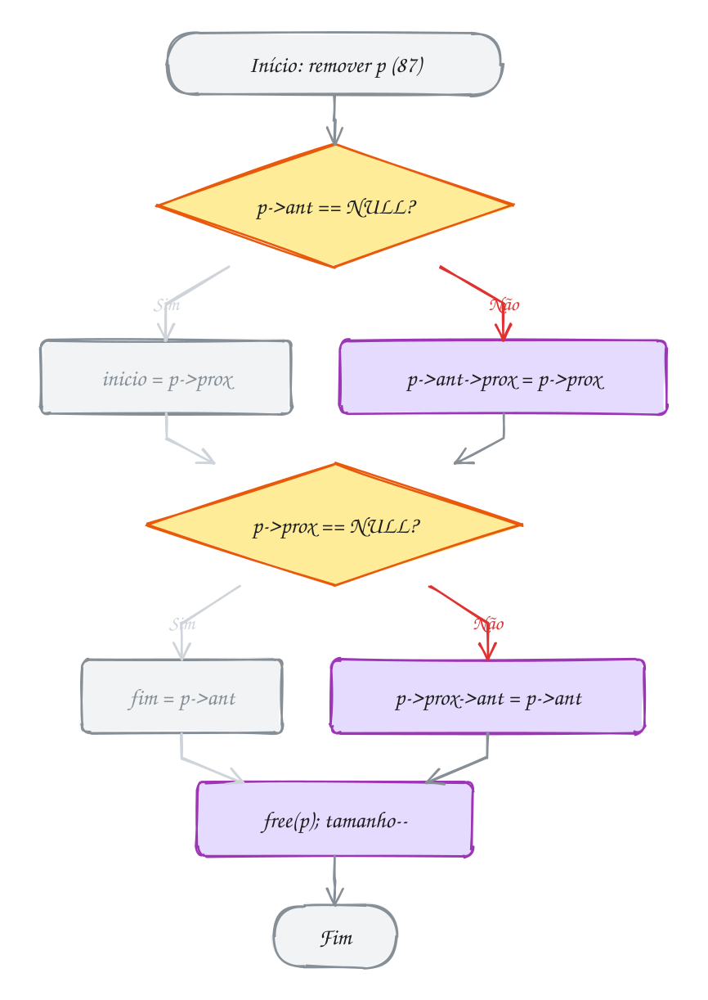
Exemplo A157 · Mexendo nas duas pontas: a fila do pronto-socorro
#include <stdio.h>
#include "0079-lista.h"
static void mostra(const Lista *l) {
printf("(%d) ", l->tamanho);
lista_imprime(l);
}
int main(void) {
Lista fila;
lista_inicia(&fila);
// fichas de atendimento: normais entram atrás, urgente entra na frente
lista_insere_fim(&fila, 31);
lista_insere_fim(&fila, 32);
lista_insere_fim(&fila, 33);
lista_insere_inicio(&fila, 90); // caso urgente: passa na frente
mostra(&fila);
// atender o primeiro: remover o início é O(1)
printf("atende %d\n", fila.inicio->valor);
lista_remove_no(&fila, fila.inicio);
// o último desistiu: com o ponteiro fim, tirar o último também é O(1)
printf("desistiu %d\n", fila.fim->valor);
lista_remove_no(&fila, fila.fim);
mostra(&fila);
// esvaziando pela frente: no fim, as DUAS pontas voltam a NULL
while (fila.inicio != NULL) lista_remove_no(&fila, fila.inicio);
printf("vazia: inicio %s, fim %s, tamanho %d\n",
fila.inicio == NULL ? "NULL" : "?",
fila.fim == NULL ? "NULL" : "?", fila.tamanho);
// e a lista vazia continua pronta para uso
lista_insere_inicio(&fila, 34);
printf("um só: início e fim são o mesmo nó? %s\n",
fila.inicio == fila.fim ? "sim" : "não");
lista_libera(&fila);
return 0;
}
// Saída:
// (4) 90 <-> 31 <-> 32 <-> 33
// atende 90
// desistiu 33
// (2) 31 <-> 32
// vazia: inicio NULL, fim NULL, tamanho 0
// um só: início e fim são o mesmo nó? sim
gcc ~/LPEDC/material/A157.c ~/LPEDC/material/0079-lista.c -o ~/LPEDC/material/A157 && ~/LPEDC/material/A157
Exemplo A158 · O controle remoto: canal seguinte e canal anterior
#include <stdio.h>
#include "0079-lista.h"
int main(void) {
Lista canais;
lista_inicia(&canais);
int numeros[] = {2, 4, 5, 7, 11, 13};
for (int i = 0; i < 6; i++) lista_insere_fim(&canais, numeros[i]);
No *atual = canais.inicio; // a TV liga no primeiro canal
const char *apertos = ">>><<>>>>>"; // > próximo, < anterior
printf("liga no %d\n", atual->valor);
for (int i = 0; apertos[i] != '\0'; i++) {
if (apertos[i] == '>' && atual->prox != NULL) {
atual = atual->prox; // anda para frente (no 13, fica)
} else if (apertos[i] == '<' && atual->ant != NULL) {
atual = atual->ant; // anda para trás: só na lista dupla
}
printf("%c canal %d\n", apertos[i], atual->valor);
}
lista_libera(&canais);
return 0;
}
// Saída:
// liga no 2
// > canal 4
// > canal 5
// > canal 7
// < canal 5
// < canal 4
// > canal 5
// > canal 7
// > canal 11
// > canal 13
// > canal 13
gcc ~/LPEDC/material/A158.c ~/LPEDC/material/0079-lista.c -o ~/LPEDC/material/A158 && ~/LPEDC/material/A158
Exercício E469 · ★☆☆
O pátio de manobras quer saber o peso dos ÚLTIMOS 3 vagões do trem, os que vão ser desengatados na próxima estação. Monte o trem com lista_insere_fim (120, 95, 101, 88, 130 e 76 toneladas) e, começando do fim e andando com ant, mostre os 3 últimos (do último para trás) e a soma deles. Não comece do início.
Saída esperada:
76 130 88
últimos 3: 294 t
gcc ~/LPEDC/material/E469.c ~/LPEDC/material/0079-lista.c -o ~/LPEDC/material/E469 && ~/LPEDC/material/E469
Exercício E471 · ★★☆
Um palíndromo se lê igual nos dois sentidos. Com uma lista dupla dá para conferir sem vetor nenhum: um ponteiro sai do início, outro sai do fim, e os dois andam em direção ao meio comparando. Guarde cada letra como int (char é número) e escreva:
void monta(Lista *l, const char *palavra) uma letra por nó, no fim
bool eh_palindromo(const Lista *l)
Teste com "radar", "trem", "arara" e "ab".
Saída esperada:
radar: sim
trem: não
arara: sim
ab: não
gcc ~/LPEDC/material/E471.c ~/LPEDC/material/0079-lista.c -o ~/LPEDC/material/E471 && ~/LPEDC/material/E471
Exercício E472 · ★★☆
Engatar um vagão no meio do trem mexe em QUATRO setas. Monte o trem 98, 105, 87, 110 com lista_insere_fim e escreva
bool insere_depois(Lista *l, No *p, int valor)
que cria um nó com o valor logo depois do nó p (que está na lista), sem esquecer o caso em que p é o último. Engate um vagão de 99 t depois do de 105 e um de 70 t depois do último. Mostre a lista nos dois sentidos (lista_imprime e lista_imprime_reverso) e a quantidade de vagões.
Saída esperada:
98 <-> 105 <-> 99 <-> 87 <-> 110 <-> 70
70 <-> 110 <-> 87 <-> 99 <-> 105 <-> 98
6 vagões
gcc ~/LPEDC/material/E472.c ~/LPEDC/material/0079-lista.c -o ~/LPEDC/material/E472 && ~/LPEDC/material/E472
Exercício E474 · ★★★
Todo editor de texto tem um cursor que anda para os dois lados, e uma lista dupla de letras é um jeito clássico de fazer isso: inserir e apagar na posição do cursor custa O(1). Simule o teclado com a string de teclas
"progamr#<<r>>a"
onde letra insere na posição do cursor, '<' anda uma letra para a esquerda, '>' anda para a direita e '#' apaga a letra à esquerda do cursor (o backspace). Nas pontas, '<', '>' e '#' não fazem nada. No fim, mostre o texto com uma '|' onde está o cursor. Use uma lista dupla de letras, com a struct escrita por você.
Saída esperada:
texto: programa|
gcc ~/LPEDC/material/E474.c ~/LPEDC/material/0079-lista.c -o ~/LPEDC/material/E474 && ~/LPEDC/material/E474
Algumas tarefas não têm fim, só "o próximo". O garçom do rodízio serve as
mesas 3, 7, 12 e 15 e, depois da última, volta à 3. No jogo de tabuleiro, a
vez passa de jogador em jogador e, depois do último, volta ao primeiro. Numa
lista encadeada comum, o último nó aponta para NULL, e o programa teria de
perceber o fim e pular de volta ao início a cada volta.
Pense numa roda de ciranda: cada pessoa segura a mão da seguinte, e a última
segura a mão da primeira. Não há ponta solta. Uma lista circular é uma
lista encadeada em que o último nó aponta para o primeiro, e não para
NULL, e os nós formam um anel (FEOFILOFF, 2009, cap. 4). Ela serve para
rodízios em geral, como a vez dos jogadores ou a divisão do tempo da CPU entre
os programas que estão rodando (TENENBAUM; LANGSAM; AUGENSTEIN, 1995,
cap. 4).
Numa lista circular, convém guardar o ponteiro para o último nó, e não
para o primeiro. Parece estranho, mas o primeiro está a uma seta de
distância: é ultimo->prox. Com o último em mãos, você alcança as duas
pontas sem percorrer nada, e inserir no início e no fim custa O(1)
(TENENBAUM; LANGSAM; AUGENSTEIN, 1995, cap. 4). Inserir no início é encaixar
o novo nó entre o último e o primeiro. Inserir no fim é a mesma coisa, com
um passo a mais: depois de encaixar, declare o novo nó como o último. No
anel, início e fim são vizinhos, e só o ponteiro ultimo diz quem é quem.
Se a lista guardasse o primeiro, inserir no início exigiria mudar a seta do último para o novo primeiro, e achar o último custa percorrer o anel inteiro, O(n).
Percorrer pede um cuidado novo. Não existe NULL para parar o laço; ele para
ao voltar ao ponto de partida. Só que o laço começa justamente no ponto
de partida, e um while (p != primeiro) testaria a condição antes de andar e
não rodaria nem uma vez. O laço certo é o do-while (assunto 0021), que
executa o corpo antes de testar. A lista vazia, ultimo == NULL, não tem
primeiro, e é tratada antes do laço (CELES; RANGEL, 2002):
if (ultimo != NULL) {
No *p = ultimo->prox; // começa no primeiro
do {
printf("%d ", p->valor);
p = p->prox;
} while (p != ultimo->prox); // parou quando voltou ao primeiro
}
Duas operações saem quase de graça. Girar a roda, fazendo o primeiro
virar o último, é só ultimo = ultimo->prox: nenhum nó muda, só o ponteiro de
referência anda uma casa. Juntar duas listas circulares numa só é trocar
dois ponteiros, as setas que fecham cada anel, também O(1).
A lista dupla também pode ser circular: o último aponta para o primeiro pela frente, e o primeiro aponta para o último por trás. É a forma que o Cormen usa, com um nó sentinela que fica entre o fim e o começo e nunca guarda dado (CORMEN et al., 2024, cap. 10). O assunto 0174 volta a ela.
Um problema clássico usa o anel: o problema de Josephus. Pessoas em roda eliminam uma a cada k passos, até sobrar uma. Na lista circular, isso vira andar k nós, remover o nó, e repetir até restar um nó que aponta para si mesmo (FEOFILOFF, 2009, cap. 4).
[!WARNING] Na lista circular,
pnunca viraNULL: um laçop != NULLnão termina. Nolibera, corte o círculo antes (ultimo->prox = NULL) e trate como lista comum: sem isso, o seguinte do último é o primeiro, já liberado.
O garçom do rodízio serve as mesas 3, 7, 12 e 15 e, na última, volta à 3. O
ponteiro da lista fica na mesa 15, e a 3 é ultimo->prox:
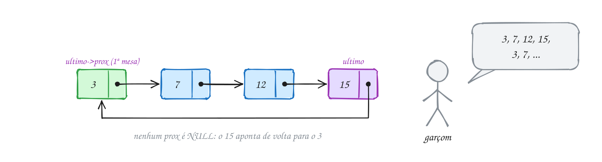
As duas inserções do lista.c:
No *lista_insere_inicio(No *ultimo, int valor) {
No *novo = cria_no(valor); // cria_no faz novo->prox = novo
if (ultimo == NULL) return novo; // único nó: primeiro e último
novo->prox = ultimo->prox; // o novo aponta para o antigo primeiro
ultimo->prox = novo; // o último fecha o círculo no novo
return ultimo;
}
No *lista_insere_fim(No *ultimo, int valor) {
// inserir no fim = inserir no início e dizer que o novo é o último
ultimo = lista_insere_inicio(ultimo, valor);
return ultimo->prox;
}
#include <stdio.h>
#include "lista.h"
int main(void) {
No *salao = NULL; // ponteiro para a ÚLTIMA mesa
int mesas[] = {3, 7, 12, 15};
for (int i = 0; i < 4; i++) salao = lista_insere_fim(salao, mesas[i]);
lista_imprime(salao);
// o garçom sai da primeira mesa e serve 6 vezes, sem nunca achar um fim
printf("serve:");
No *garcom = salao->prox;
for (int i = 0; i < 6; i++) {
printf(" %d", garcom->valor);
garcom = garcom->prox;
}
printf("\n");
lista_remove(&salao, 12);
printf("a mesa 12 pagou e foi embora\n");
lista_imprime(salao);
lista_libera(salao);
return 0;
}
// Saída:
// 3 -> 7 -> 12 -> 15 -> (volta ao 3)
// serve: 3 7 12 15 3 7
// a mesa 12 pagou e foi embora
// 3 -> 7 -> 15 -> (volta ao 3)
O lista_imprime testa a lista vazia, põe p na mesa 3 e pergunta "já
voltei ao primeiro?": com 4 mesas, Não três vezes e Sim na quarta:
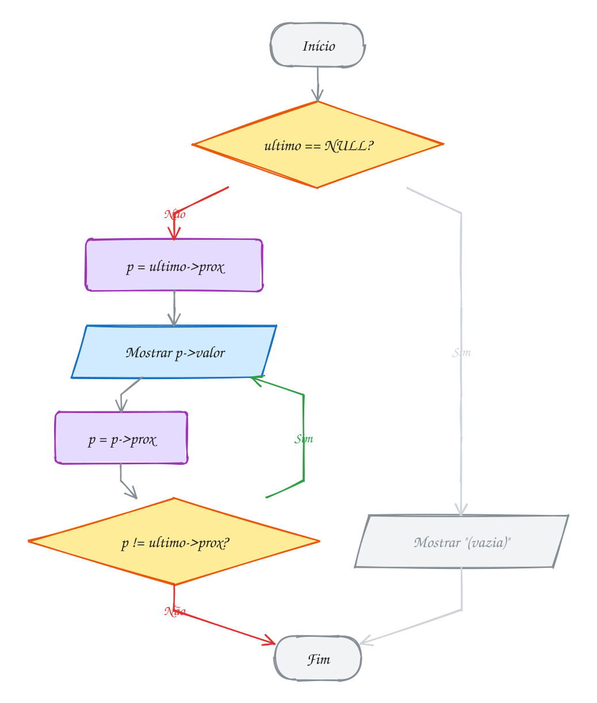
Exemplo A159 · A playlist no repetir: um nó só, as duas pontas e o meio
#include <stdio.h>
#include "0080-lista.h"
int main(void) {
No *playlist = NULL; // ponteiro para a ÚLTIMA faixa
lista_imprime(playlist);
// uma faixa só: ela é a primeira e a última, e aponta para si mesma
playlist = lista_insere_fim(playlist, 4);
lista_imprime(playlist);
printf("aponta para si mesma? %s\n", playlist->prox == playlist ? "sim" : "não");
// com o ponteiro no último, as duas pontas custam O(1)
playlist = lista_insere_fim(playlist, 9);
playlist = lista_insere_fim(playlist, 2);
playlist = lista_insere_inicio(playlist, 7); // entra antes da primeira
lista_imprime(playlist);
printf("primeira: %d, última: %d\n", playlist->prox->valor, playlist->valor);
// dá para dar uma volta completa a partir de QUALQUER faixa
No *comeco = playlist->prox;
while (comeco->valor != 9) comeco = comeco->prox;
printf("tocando a partir da 9:");
No *p = comeco;
do {
printf(" %d", p->valor);
p = p->prox;
} while (p != comeco);
printf("\n");
// tirar a última: o ponteiro da lista recua para a penúltima
lista_remove(&playlist, 2);
lista_imprime(playlist);
printf("%d faixas\n", lista_tamanho(playlist));
lista_libera(playlist);
return 0;
}
// Saída:
// (vazia)
// 4 -> (volta ao 4)
// aponta para si mesma? sim
// 7 -> 4 -> 9 -> 2 -> (volta ao 7)
// primeira: 7, última: 2
// tocando a partir da 9: 9 2 7 4
// 7 -> 4 -> 9 -> (volta ao 7)
// 3 faixas
gcc ~/LPEDC/material/A159.c ~/LPEDC/material/0080-lista.c -o ~/LPEDC/material/A159 && ~/LPEDC/material/A159
Exemplo A160 · Batata quente: quem sobra na roda?
#include <stdio.h>
#include <stdlib.h>
#include "0080-lista.h"
// 8 crianças em roda, numeradas de 1 a 8. A batata começa na 1 e passa de
// mão em mão; a 3ª criança a pegar a batata sai da roda, e a contagem
// recomeça na seguinte. Quem sobra? (o problema de Josephus)
int main(void) {
int n = 8, passo = 3;
No *roda = NULL;
for (int i = 1; i <= n; i++) roda = lista_insere_fim(roda, i);
lista_imprime(roda);
No *ant = roda; // o último: anterior do primeiro
No *p = roda->prox; // a batata começa na criança 1
printf("saem:");
while (p->prox != p) { // enquanto houver mais de uma criança
for (int i = 1; i < passo; i++) {
ant = p;
p = p->prox;
}
printf(" %d", p->valor);
ant->prox = p->prox; // tira p da roda
free(p);
p = ant->prox; // a contagem recomeça na seguinte
}
printf("\nsobrou a criança %d\n", p->valor);
lista_libera(p); // um nó só, que aponta para si mesmo
return 0;
}
// Saída:
// 1 -> 2 -> 3 -> 4 -> 5 -> 6 -> 7 -> 8 -> (volta ao 1)
// saem: 3 6 1 5 2 8 4
// sobrou a criança 7
gcc ~/LPEDC/material/A160.c ~/LPEDC/material/0080-lista.c -o ~/LPEDC/material/A160 && ~/LPEDC/material/A160
Exercício E475 · ★☆☆
Numa roda de chimarrão com 5 pessoas (numeradas de 1 a 5), a cuia começa com a pessoa 1 e passa para a seguinte 12 vezes. Com quem ela fica? Monte a roda com lista_insere_fim e descubra ANDANDO na lista circular. Depois confira com uma conta usando %.
Saída esperada:
1 -> 2 -> 3 -> 4 -> 5 -> (volta ao 1)
depois de 12 passadas, a cuia está com a pessoa 3
conferindo com %: pessoa 3
gcc ~/LPEDC/material/E475.c ~/LPEDC/material/0080-lista.c -o ~/LPEDC/material/E475 && ~/LPEDC/material/E475
Exercício E477 · ★★☆
Rita, Davi e Lia vão de carro de Belo Horizonte a Vitória e voltam: são 1000 km de estrada. Eles revezam ao volante, nesta ordem, cada um dirigindo um trecho de 150 km (o último trecho é o que sobrar). Com uma lista circular de structs (nome e km dirigidos), mostre cada trecho e, no fim, quanto cada um dirigiu.
Saída esperada:
trecho 1: Rita dirige 150 km
trecho 2: Davi dirige 150 km
trecho 3: Lia dirige 150 km
trecho 4: Rita dirige 150 km
trecho 5: Davi dirige 150 km
trecho 6: Lia dirige 150 km
trecho 7: Rita dirige 100 km
Rita: 400 km
Davi: 300 km
Lia: 300 km
gcc ~/LPEDC/material/E477.c ~/LPEDC/material/0080-lista.c -o ~/LPEDC/material/E477 && ~/LPEDC/material/E477
Exercício E478 · ★★☆
Dois salões do restaurante vão virar um só. Cada salão é uma lista circular de mesas, guardada pelo último nó: o salão A tem as mesas 1, 2 e 3 e o B tem 10 e 20 (monte com lista_insere_fim). Escreva No *concatena(No *ult_a, No *ult_b), que emenda b depois de a e devolve o último da lista nova, em O(1): sem percorrer nada, só trocando ponteiros. Trate as listas vazias. Mostre A, B, a junção e a junção com uma lista vazia (NULL). No fim, libere a lista juntada uma vez só.
Saída esperada:
A: 1 -> 2 -> 3 -> (volta ao 1)
B: 10 -> 20 -> (volta ao 10)
juntas: 1 -> 2 -> 3 -> 10 -> 20 -> (volta ao 1)
com vazia: 1 -> 2 -> 3 -> 10 -> 20 -> (volta ao 1)
gcc ~/LPEDC/material/E478.c ~/LPEDC/material/0080-lista.c -o ~/LPEDC/material/E478 && ~/LPEDC/material/E478
Exercício E479 · ★★★
O sistema operacional divide a CPU entre os programas com o escalonamento round-robin: cada processo roda no máximo um QUANTUM de tempo e vai para o fim da fila; quem termina sai da roda. Simule com uma lista circular de processos (id e tempo que falta), quantum 2, e os processos P1 (precisa de 5 unidades), P2 (2) e P3 (4), chegando nessa ordem no tempo 0. A struct é sua.
Saída esperada:
t=0..2: P1 (falta 3)
t=2..4: P2 (terminou)
t=4..6: P3 (falta 2)
t=6..8: P1 (falta 1)
t=8..10: P3 (terminou)
t=10..11: P1 (terminou)
gcc ~/LPEDC/material/E479.c ~/LPEDC/material/0080-lista.c -o ~/LPEDC/material/E479 && ~/LPEDC/material/E479
Abra um player de música. Você pula faixas para a frente e para trás, tira uma da fila, liga o "repetir tudo" e, depois da última, a primeira volta a tocar. Ao fechar o app, a playlist continua lá na próxima vez. Por trás dessas ações estão quase todas as peças deste módulo, e montar o player é o jeito de vê-las trabalhando juntas.
A playlist é uma fila de músicas com um marcador na que está tocando, como
o dedo que acompanha a lista de um cardápio. O programa a organiza como um
TAD, no molde do assunto 0074, dividido em playlist.h e playlist.c.
Quem usa o TAD vê só a struct Musica, com título, artista e duração em
segundos, e as operações: adicionar, remover, próxima, anterior, salvar. Os
nós ficam escondidos no .c (CELES; CERQUEIRA; RANGEL, 2016).
Dentro do .c, cada nó se chama Faixa e guarda uma Musica e duas setas,
ant e prox: é a lista dupla do assunto 0079. A struct playlist guarda
as duas pontas, inicio e fim, o tamanho, um bool repetir e um campo
novo, atual, que aponta para a faixa que toca agora (CELES; RANGEL, 2002).
Esse atual é um cursor: um ponteiro que marca uma posição da lista e
anda por ela conforme o usuário pede.
Cada operação reaproveita um assunto. Adicionar é a inserção no fim da
lista dupla, O(1) graças ao ponteiro fim. Remover pelo título é a busca
do assunto 0077, comparando com strcmp, seguida da remoção dupla, que
desvia as duas setas que chegam no nó. Há um cuidado a mais: se a faixa
removida era a atual, o cursor não pode ficar apontando para memória
liberada. Ele vai para a faixa seguinte, ou para a anterior se a removida
era a última.
Próxima e anterior movem o cursor por prox e ant. Com o
"repetir" ligado, elas dão a volta nas pontas, como numa lista circular
(assunto 0080). A volta inteira mora numa função só:
const Musica *playlist_proxima(Playlist *p) {
if (p->atual == NULL) return NULL;
if (p->atual->prox != NULL) p->atual = p->atual->prox;
else if (p->repetir) p->atual = p->inicio; // dá a volta
else return NULL; // fim da playlist
return &p->atual->musica;
}
Repare que a lista não é circular: o prox do último continua NULL. A
volta é uma decisão da função, que olha o repetir. A vantagem é que
imprimir, liberar e salvar continuam com o "for de lista" de sempre, sem o
risco de laço infinito do anel.
Salvar e carregar usam o arquivo texto do módulo 09, com uma música
por linha no formato titulo;artista;segundos. Carregar lê cada linha com
fgets e separa os campos com sscanf, que é o scanf lendo de uma string.
Por fim, para cada permite ao cliente fazer algo com cada música, como
contar as mais longas, sem ver os nós. A função recebe um ponteiro para
função, que ela chama uma vez por música, e um void * com os dados extras
dessa função, como nos assuntos 0050 e 0051 (KERNIGHAN; RITCHIE, 1989).
Os tamanhos mostram o preço da organização. A Musica tem 40 + 30 bytes de
texto, 2 de preenchimento e 4 do int, 76 bytes. A Faixa soma mais 4 de
preenchimento e dois ponteiros, e sizeof(Faixa) dá 96. O const Musica *
que playlist_proxima devolve aponta para dentro de uma faixa, e fica
solto se essa faixa for removida depois.
[!WARNING]
playlist_proxima(p)->tituloacessaNULLquando a função devolveNULL, o que ocorre na última música com repetir desligado: guarde o ponteiro e teste antes de usar. Copie texto comsnprintf(destino, sizeof destino, "%s", origem), que corta em vez de estourar o vetor como ostrcpy.
Uma playlist de cinco músicas, 20:01 no total. Pulando duas, toca a terceira; a "Asa Branca" sai, a playlist chega à última e, com repetir ligado, volta para "Aquarela":
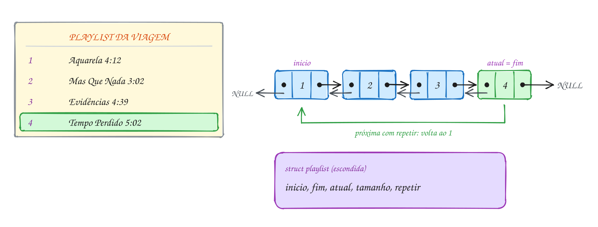
O "repetir" mora numa função:
const Musica *playlist_proxima(Playlist *p) {
if (p->atual == NULL) return NULL;
if (p->atual->prox != NULL) p->atual = p->atual->prox;
else if (p->repetir) p->atual = p->inicio; // dá a volta
else return NULL; // fim da playlist
return &p->atual->musica;
}
#include <stdio.h>
#include "playlist.h"
int main(void) {
Playlist *viagem = playlist_cria();
if (viagem == NULL) return 1;
playlist_adiciona(viagem, "Aquarela", "Toquinho", 252);
playlist_adiciona(viagem, "Asa Branca", "Luiz Gonzaga", 186);
playlist_adiciona(viagem, "Mas Que Nada", "Jorge Ben", 182);
playlist_adiciona(viagem, "Evidências", "Chitãozinho e Xororó", 279);
playlist_adiciona(viagem, "Tempo Perdido", "Legião Urbana", 302);
int total = playlist_duracao(viagem);
printf("%d músicas, %d:%02d no total\n", playlist_tamanho(viagem), total / 60, total % 60);
playlist_proxima(viagem);
playlist_proxima(viagem); // pulou duas: agora toca a 3ª
playlist_imprime(viagem);
playlist_remove(viagem, "Asa Branca");
playlist_proxima(viagem);
playlist_proxima(viagem); // chegou na última
if (playlist_proxima(viagem) == NULL) printf("fim da playlist\n");
playlist_repetir(viagem, true);
printf("repetir ligado, próxima: %s\n", playlist_proxima(viagem)->titulo);
printf("anterior: %s\n", playlist_anterior(viagem)->titulo);
playlist_libera(viagem);
return 0;
}
// Saída:
// 5 músicas, 20:01 no total
// 1. Aquarela - Toquinho (4:12)
// 2. Asa Branca - Luiz Gonzaga (3:06)
// > 3. Mas Que Nada - Jorge Ben (3:02)
// 4. Evidências - Chitãozinho e Xororó (4:39)
// 5. Tempo Perdido - Legião Urbana (5:02)
// fim da playlist
// repetir ligado, próxima: Aquarela
// anterior: Tempo Perdido
Em "Tempo Perdido" não há próxima: com repetir desligado a função devolve
NULL; ligado, o atual volta ao início:
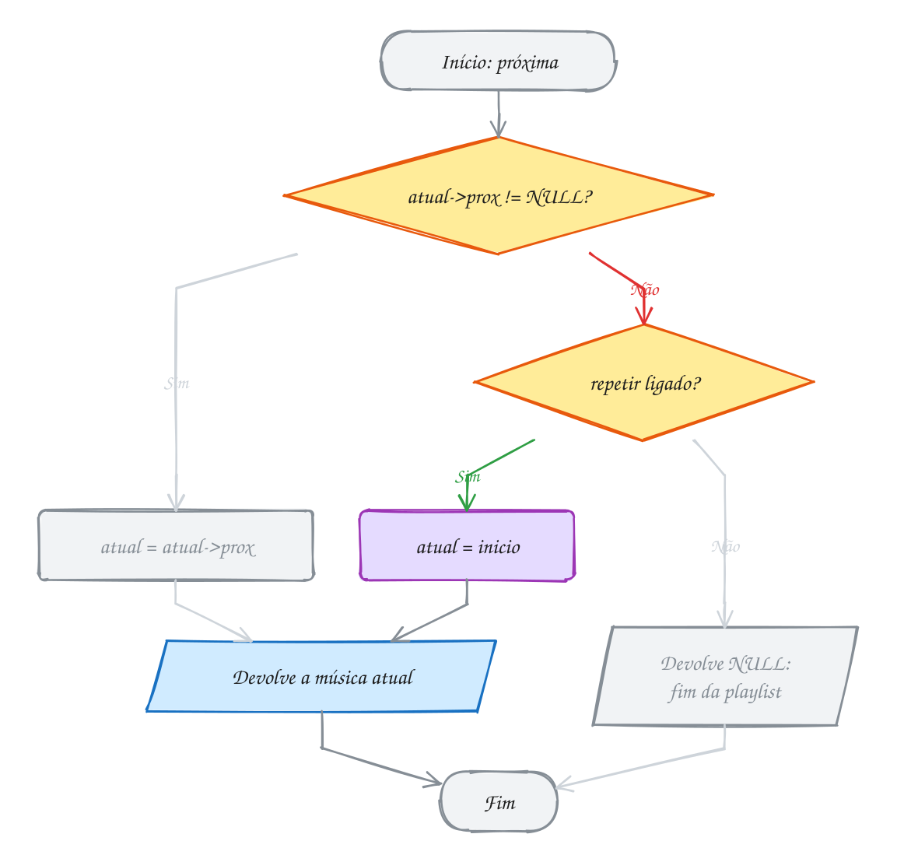
Exemplo A161 · A trilha do trajeto até o trabalho
#include <stdio.h>
#include "0081-playlist.h"
int main(void) {
// uma playlist vazia não toca nada, e não quebra
Playlist *trajeto = playlist_cria();
if (trajeto == NULL) return 1;
if (playlist_atual(trajeto) == NULL && playlist_proxima(trajeto) == NULL) {
printf("playlist vazia: nada tocando\n");
}
playlist_adiciona(trajeto, "Trem das Onze", "Adoniran Barbosa", 190);
playlist_adiciona(trajeto, "Detalhes", "Roberto Carlos", 268);
playlist_adiciona(trajeto, "O Bêbado e a Equilibrista", "Elis Regina", 228);
playlist_adiciona(trajeto, "Sina", "Djavan", 233);
playlist_repetir(trajeto, true); // o ônibus demora mais que a playlist
// 20 minutos de ônibus: toca música atrás de música até chegar
int trajeto_s = 20 * 60;
int relogio = 0; // em segundos, desde que entrou no ônibus
const Musica *m = playlist_atual(trajeto);
while (relogio + m->segundos <= trajeto_s) {
printf("%2d:%02d %s\n", relogio / 60, relogio % 60, m->titulo);
relogio += m->segundos;
m = playlist_proxima(trajeto); // com repetir, nunca é NULL
}
int ouviu = trajeto_s - relogio;
printf("%2d:%02d %s (chegou no ponto depois de %d s)\n",
relogio / 60, relogio % 60, m->titulo, ouviu);
// amanhã continua de onde parou: a playlist lembra a música atual
printf("amanhã começa em: %s\n", playlist_atual(trajeto)->titulo);
playlist_libera(trajeto);
return 0;
}
// Saída:
// playlist vazia: nada tocando
// 0:00 Trem das Onze
// 3:10 Detalhes
// 7:38 O Bêbado e a Equilibrista
// 11:26 Sina
// 15:19 Trem das Onze
// 18:29 Detalhes (chegou no ponto depois de 91 s)
// amanhã começa em: Detalhes
gcc ~/LPEDC/material/A161.c ~/LPEDC/material/0081-playlist.c -o ~/LPEDC/material/A161 && ~/LPEDC/material/A161
Exemplo A162 · Salvar a playlist no arquivo e carregar de volta
#include <stdio.h>
#include "0081-playlist.h"
// callback para playlist_para_cada: conta as músicas com mais de 4 minutos
static void conta_longas(const Musica *m, void *extra) {
int *contador = extra; // o void * volta a ser o que era: um int *
if (m->segundos > 240) (*contador)++;
}
int main(void) {
Playlist *original = playlist_cria();
if (original == NULL) return 1;
playlist_adiciona(original, "Aquarela", "Toquinho", 252);
playlist_adiciona(original, "Mas Que Nada", "Jorge Ben", 182);
playlist_adiciona(original, "Tempo Perdido", "Legião Urbana", 302);
if (!playlist_salva(original, "playlist.txt")) {
printf("não consegui gravar\n");
playlist_libera(original);
return 1;
}
playlist_libera(original); // a playlist some da memória; o arquivo fica
Playlist *lida = playlist_carrega("playlist.txt");
if (lida == NULL) return 1;
printf("carregou %d músicas:\n", playlist_tamanho(lida));
playlist_imprime(lida);
int longas = 0;
playlist_para_cada(lida, conta_longas, &longas);
printf("%d com mais de 4 minutos\n", longas);
playlist_libera(lida);
remove("playlist.txt"); // apaga o arquivo de teste
return 0;
}
// Conteúdo de playlist.txt enquanto existe:
// Aquarela;Toquinho;252
// Mas Que Nada;Jorge Ben;182
// Tempo Perdido;Legião Urbana;302
//
// Saída:
// carregou 3 músicas:
// > 1. Aquarela - Toquinho (4:12)
// 2. Mas Que Nada - Jorge Ben (3:02)
// 3. Tempo Perdido - Legião Urbana (5:02)
// 2 com mais de 4 minutos
gcc ~/LPEDC/material/A162.c ~/LPEDC/material/0081-playlist.c -o ~/LPEDC/material/A162 && ~/LPEDC/material/A162
Exercício E481 · ★☆☆
Monte a playlist do churrasco usando só playlist.h, nesta ordem:
Deixa a Vida Me Levar, Zeca Pagodinho, 233 s
Ai Se Eu Te Pego, Michel Teló, 166 s
País Tropical, Jorge Ben, 196 s
Velha Infância, Tribalistas, 251 s
Garota de Ipanema, Tom Jobim, 194 s
Avance três músicas, volte uma, mostre a playlist, o total em min:seg e o que está tocando.
Saída esperada:
1. Deixa a Vida Me Levar - Zeca Pagodinho (3:53)
2. Ai Se Eu Te Pego - Michel Teló (2:46)
> 3. País Tropical - Jorge Ben (3:16)
4. Velha Infância - Tribalistas (4:11)
5. Garota de Ipanema - Tom Jobim (3:14)
5 músicas, 17:20
tocando agora: País Tropical - Jorge Ben
gcc ~/LPEDC/material/E481.c ~/LPEDC/material/0081-playlist.c -o ~/LPEDC/material/E481 && ~/LPEDC/material/E481
Exercício E483 · ★★☆
A playlist não deixa você ver os nós, mas playlist_para_cada chama uma função SUA para cada música, levando junto um void *extra. Crie a playlist com estas músicas (título, artista, segundos): Aquarela, Toquinho, 252; Mas Que Nada, Jorge Ben, 182; Evidências, Chitãozinho e Xororó, 279; Tempo Perdido, Legião Urbana, 302; Taj Mahal, Jorge Ben, 189. Com dois callbacks seus, mostre a música mais longa (extra aponta para um const Musica * que guarda a maior até agora) e quantas músicas e quantos segundos (em min:seg) tem Jorge Ben (extra aponta para uma struct sua com o nome, a contagem e a soma).
Saída esperada:
mais longa: Tempo Perdido (5:02)
Jorge Ben: 2 músicas, 6:11
gcc ~/LPEDC/material/E483.c ~/LPEDC/material/0081-playlist.c -o ~/LPEDC/material/E483 && ~/LPEDC/material/E483
Exercício E484 · ★★☆
O bolão da Copa da firma mantém um ranking: mais pontos na frente e, em caso de empate, ordem alfabética. Escreva, com uma lista encadeada de structs (nome e pontos) neste arquivo:
insere no lugar certo do ranking (inserção ordenada)
remove um participante pelo nome
imprime com a posição
Participantes, na ordem em que entraram: Ana 12, Beto 15, Cris 12, Duda 9, Edu 15. Depois a Cris sai do bolão.
Saída esperada:
1. Beto 15
2. Edu 15
3. Ana 12
4. Cris 12
5. Duda 9
Cris saiu do bolão
1. Beto 15
2. Edu 15
3. Ana 12
4. Duda 9
gcc ~/LPEDC/material/E484.c ~/LPEDC/material/0081-playlist.c -o ~/LPEDC/material/E484 && ~/LPEDC/material/E484
Exercício E486 · ★★★
Um polinômio cabe numa lista encadeada: um nó por termo (coeficiente e expoente), em ordem DECRESCENTE de expoente, sem termos de coeficiente 0. Escreva neste arquivo:
insere_termo(lista, coef, exp) põe o termo no lugar certo; se já
existe um com esse expoente, soma os
coeficientes, e se a soma der 0, tira
o nó
soma(p, q) devolve um polinômio NOVO com p + q
imprime(p) no formato do exemplo
avalia(p, x) o valor do polinômio para esse x
Teste com P(x) = 3x^4 + 2x^2 - 5 e Q(x) = x^4 - 2x^2 + 7x.
Saída esperada:
P(x) = 3x^4 + 2x^2 - 5
Q(x) = x^4 - 2x^2 + 7x
P + Q = 4x^4 + 7x - 5
(P + Q)(2) = 73
gcc ~/LPEDC/material/E486.c ~/LPEDC/material/0081-playlist.c -o ~/LPEDC/material/E486 && ~/LPEDC/material/E486
30 exercícios que misturam os assuntos do módulo, no ritmo da prova. Arquivos P1101.c a P1130.c, em material/; resoluções em _respostas/11-listas/lista/.
Exercício P1101 · ★☆☆ · Encaixar uma música no meio da playlist
A playlist da festa junina é uma lista sequencial: um vetor de 8 códigos de música e um contador n. Escreva
bool seq_insere(ListaSeq *l, int pos, int codigo)
que põe o código na posição pos (0 <= pos <= n), empurrando uma casa para a direita os que estavam de pos em diante, e devolve false se a lista estiver cheia ou se pos for inválida. Conte os deslocamentos numa variável global. Faça, nesta ordem: insere(0, 10), insere(1, 30), insere(1, 20), insere(0, 5) e insere(9, 99).
Saída esperada:
[5 10 20 30]
Inserir na posição 9: recusado
Deslocamentos: 4
Resposta esperada: a saída acima (0 + 0 + 1 + 3 deslocamentos).
Exercício P1102 · ★☆☆ · O itinerário do ônibus, parada por parada
O itinerário da linha 640 é montado na ordem em que as paradas são cadastradas: 101, 205, 310, 412 e 520. Sem ponteiro para o último, cada inserção no FIM precisa andar a lista até o último nó. Escreva
No *insere_fim(No *inicio, int valor, int *visitados)
que devolve o (possivelmente novo) início e soma em *visitados quantos nós percorreu para achar o último. Monte o itinerário, mostre-o, mostre o total de nós visitados e libere tudo.
Saída esperada:
101 -> 205 -> 310 -> 412 -> 520 -> NULL
Nós visitados: 10
Exercício P1103 · ★☆☆ · Reajuste de preço achando o nó
A lista do hortifruti guarda código e preço de cada produto. Escreva
Produto *busca(Produto *inicio, int codigo)
que devolve o ENDEREÇO do nó com aquele código (ou NULL). Com esse ponteiro em mãos, o main muda o preço direto no nó, sem percorrer de novo. Monte a lista inserindo no início os produtos (40, 6.00), (30, 8.50), (20, 3.20) e (10, 12.00); reajuste o 30 em 10% e tente reajustar o 99.
Saída esperada:
Antes: 10: 12.00 | 20: 3.20 | 30: 8.50 | 40: 6.00 |
Código 30: 8.50 -> 9.35
Código 99: não encontrado
Depois: 10: 12.00 | 20: 3.20 | 30: 9.35 | 40: 6.00 |
Resposta esperada: a saída acima (8.50 * 1.10 = 9.35).
Exercício P1104 · ★☆☆ · Quem desistiu da fila do restaurante
A fila de espera do restaurante é uma lista encadeada de nomes. Escreva
Cliente *remove_nome(Cliente *inicio, const char *nome, bool *removeu)
que tira da lista o primeiro cliente com aquele nome (liberando o nó), devolve o novo início e diz em *removeu se achou. Monte a fila Ana, Bia, Caio, Duda (nesta ordem, inserindo no fim) e remova Bia, depois Ana, depois Zeca, mostrando a fila depois de cada tentativa.
Saída esperada:
Fila: Ana Bia Caio Duda
Sem Bia: Ana Caio Duda
Sem Ana: Caio Duda
Zeca não estava: Caio Duda
Resposta esperada: a saída acima, sem vazamento no sanitizer.
Exercício P1105 · ★☆☆ · Engatar o trem da tarde no da manhã em O(1)
Guardando o início, o fim e o tamanho da lista numa struct, inserir no fim e concatenar duas listas custam O(1). Escreva:
void insere_fim(Lista *l, int valor)
void concatena(Lista *a, Lista *b) // passa os nós de b para o fim de
// a; b fica vazia
Monte a com os vagões 1, 2 e 3 e b com 4 e 5. Mostre as duas, concatene, mostre de novo e mostre o último de a (sem percorrer). Depois concatene a com a b vazia (nada muda) e libere tudo.
Saída esperada:
a: 1 -> 2 -> 3 -> NULL (3 nós)
b: 4 -> 5 -> NULL (2 nós)
a depois: 1 -> 2 -> 3 -> 4 -> 5 -> NULL (5 nós)
b depois: NULL (0 nós)
último de a: 5
a com b vazia: 1 -> 2 -> 3 -> 4 -> 5 -> NULL (5 nós)
Resposta esperada: Só a lista a é liberada no fim (os nós de b agora são dela).
Exercício P1106 · ★☆☆ · O metrô nos dois sentidos
Uma linha de metrô vai e volta pelas mesmas estações: é uma lista dupla. Escreva insere_fim para a lista dupla com início e fim, e duas funções de impressão: uma do início para o fim (seguindo prox) e outra do fim para o início (seguindo ant). Cadastre as estações Sé, Luz, Tiradentes e Armênia (nesta ordem) e mostre a ida e a volta. Libere tudo no fim.
Saída esperada:
Ida: Sé -> Luz -> Tiradentes -> Armênia
Volta: Armênia -> Tiradentes -> Luz -> Sé
Exercício P1107 · ★☆☆ · A roda-gigante do parque
As 6 cabines da roda-gigante formam uma lista circular: depois da 6 vem a
No *insere_fim(No *ultimo, int cabine, int pessoas) // devolve o novo último
int total_pessoas(const No *ultimo)
void mostra_a_partir(const No *ultimo, int cabine) // dá uma volta
// começando nela
Cadastre as cabines 1 a 6 com 2, 4, 0, 3, 1 e 4 pessoas, mostre o total e a volta começando na cabine 4. Libere tudo no fim.
Saída esperada:
Total: 14 pessoas
A partir da 4: [4:3] [5:1] [6:4] [1:2] [2:4] [3:0]
Exercício P1108 · ★☆☆ · As senhas da farmácia e a memória
O painel da farmácia guarda as senhas numa lista. O programa mostra a lista, chama (tira do início) duas senhas e libera o resto. A saída na tela parece certa, mas o AddressSanitizer reclama: há DOIS erros de propósito com a memória. Rode, leia o relatório (procure "heap-use-after-free" e "detected memory leaks") e conserte os dois.
Saída esperada:
Senhas: 41 -> 42 -> 43 -> 44 -> NULL
Chamou 41
Chamou 42
Senhas: 43 -> 44 -> NULL
(e nenhum relatório do sanitizer depois da saída)
Resposta esperada: em libera, guarde No *seguinte = p->prox ANTES do free(p). Em chama, guarde o nó antigo, avance o início e dê free no nó antigo. A saída fica igual à de cima, sem relatório.
Exercício P1109 · ★☆☆ · A chamada em ordem alfabética
Os alunos vão chegando e entrando na lista de chamada, que precisa ficar sempre em ordem alfabética. Escreva
Aluno *insere_ordenado(Aluno *inicio, const char *nome)
que cria o nó e o encaixa no lugar certo (comparando com strcmp), devolvendo o novo início. Insira Marcos, Ana, Teo, Bia e Lia, nesta ordem, mostrando a lista depois de cada inserção. Libere tudo no fim.
Saída esperada:
Marcos
Ana Marcos
Ana Marcos Teo
Ana Bia Marcos Teo
Ana Bia Lia Marcos Teo
Exercício P1110 · ★☆☆ · A playlist de trás para frente, no lugar
A playlist do treino é uma lista sequencial (vetor + tamanho). Escreva
int seq_inverte(ListaSeq *l)
que inverte a ordem DENTRO do próprio vetor, trocando o primeiro com o último, o segundo com o penúltimo e assim por diante, e devolve quantas trocas fez. Teste com a playlist de 7 músicas 11, 22, 33, 44, 55, 66, 77 e com uma de 4 músicas 1, 2, 3, 4.
Saída esperada:
[77 66 55 44 33 22 11] em 3 trocas
[4 3 2 1] em 2 trocas
Exercício P1111 · ★★☆ · Juntar dois rankings já em ordem decrescente
As notas das turmas A e B estão em listas CRESCENTES:
a: 2 -> 5 -> 8 -> 9 -> NULL
b: 1 -> 5 -> 7 -> 10 -> 12 -> NULL
O mural precisa delas juntas, em ordem DECRESCENTE. Escreva
No *intercala_decrescente(No *a, No *b)
que faz isso numa passada só, SEM criar nem liberar nó nenhum: a cada passo, tire da frente de a ou de b o nó de menor valor e ponha-o no INÍCIO da lista resultado. Libere o resultado no fim.
Saída esperada:
a: 2 -> 5 -> 8 -> 9 -> NULL
b: 1 -> 5 -> 7 -> 10 -> 12 -> NULL
mural: 12 -> 10 -> 9 -> 8 -> 7 -> 5 -> 5 -> 2 -> 1 -> NULL
Resposta esperada: São n + m passos: O(n + m).
Exercício P1112 · ★★☆ · O leitor de código de barras que repete
O leitor do caixa às vezes registra o mesmo produto duas vezes. A lista de códigos lidos NÃO está em ordem: 7, 3, 7, 9, 3, 3, 1, 9. Escreva
int remove_repetidos(No *inicio)
que deixa só a PRIMEIRA ocorrência de cada código, na ordem original, e devolve quantos nós tirou (liberando cada um). Não use vetor auxiliar.
Saída esperada:
antes: 7 -> 3 -> 7 -> 9 -> 3 -> 3 -> 1 -> 9 -> NULL
depois: 7 -> 3 -> 9 -> 1 -> NULL
4 leituras repetidas removidas
Exercício P1113 · ★★☆ · Desengatar o k-ésimo vagão a partir do fim
O trem é uma lista simples e você não sabe o tamanho dele. Escreva
No *remove_k_do_fim(No *inicio, int k, bool *ok)
que tira o k-ésimo nó contando do FIM (k = 1 é o último), percorrendo a lista UMA vez só, e devolve o novo início (*ok diz se o nó existia). Monte o trem 10, 20, 30, 40, 50 e remova, nesta ordem, com k = 2, k = 4 e k = 5, mostrando o trem depois de cada tentativa.
Saída esperada:
trem: 10 -> 20 -> 30 -> 40 -> 50 -> NULL
k = 2: 10 -> 20 -> 30 -> 50 -> NULL
k = 4: 20 -> 30 -> 50 -> NULL
k = 5: não existe
Resposta esperada: Uma passada, O(n), memória O(1).
Exercício P1114 · ★★☆ · Os contatos que vêm para a frente
A agenda do celular é uma lista dupla (com início e fim) com Ana, Bia, Caio, Duda e Edu. Quem você procura muito deveria ficar no começo. A heurística "mover para a frente": a cada busca bem-sucedida, o nó achado sai de onde está e vai para o início. Escreva
int busca_move(Agenda *ag, const char *nome)
que faz a busca sequencial, move o nó para a frente (se achou) e devolve quantas comparações fez. Faça as buscas Duda, Duda, Edu, Duda e Ana, mostrando a agenda depois de cada uma, e compare o total com o que a mesma sequência custaria sem mover ninguém.
Saída esperada:
Duda: 4 comparações | Duda Ana Bia Caio Edu
Duda: 1 comparações | Duda Ana Bia Caio Edu
Edu: 5 comparações | Edu Duda Ana Bia Caio
Duda: 2 comparações | Duda Edu Ana Bia Caio
Ana: 3 comparações | Ana Duda Edu Bia Caio
Total movendo: 15
Total sem mover: 18
Resposta esperada: É a ideia por trás de caches como o LRU: o que foi usado há pouco tende a ser usado de novo.
Exercício P1115 · ★★☆ · Quem lava a louça (Josefo com nomes)
Depois do almoço de domingo, seis primos fazem uma roda: Ana, Bia, Caio, Duda, Edu e Fê. Começando em Ana, contam 1, 2, 3, e quem disser "3" sai da roda; a contagem recomeça do seguinte. O último que sobrar lava a louça. Monte a roda como uma lista circular de nomes guardada pelo ÚLTIMO nó e escreva
No *elimina(No *ultimo, int k)
que mostra quem sai, na ordem, libera cada nó que sai e devolve o nó que sobrou. Mostre o vencedor e libere esse último nó também.
Saída esperada:
Saem: Caio Fê Duda Bia Edu
Lava a louça: Ana
Resposta esperada: São n - 1 eliminações de k passos: O(n · k).
Exercício P1116 · ★★☆ · A agenda do consultório em vetor ordenado
Os horários marcados do dia ficam numa lista sequencial ORDENADA (em minutos desde a meia-noite, num vetor de 10). Escreva:
int ord_busca(const Agenda *a, int x, int *pos)
busca binária: devolve 1 se achou (e *pos é onde está) ou 0 (e *pos é
onde x deveria entrar para manter a ordem);
bool ord_insere(Agenda *a, int x) // recusa repetido e agenda cheia
bool ord_remove(Agenda *a, int x)
As duas últimas usam ord_busca para achar a posição e depois deslocam os itens do vetor. Insira 540, 600, 480, 720 e 600 (repetido), remova o 540 e procure o 720. Mostre os horários como hh:mm.
Saída esperada:
Agenda: 08:00 09:00 10:00 12:00
10:00: horário ocupado
Sem 09:00: 08:00 10:00 12:00
12:00 está na posição 2
Exercício P1117 · ★★☆ · Pares na frente, sem mudar a ordem
As senhas do guichê chegaram nesta ordem: 7, 2, 9, 4, 4, 1, 6. O guichê par vai atender primeiro, então as senhas pares devem vir antes das ímpares, mas cada grupo mantendo a ordem de chegada (uma partição ESTÁVEL). Escreva
No *pares_primeiro(No *inicio)
que reorganiza a lista só religando os nós (sem malloc, sem free, sem trocar valores) e devolve o novo início.
Saída esperada:
antes: 7 -> 2 -> 9 -> 4 -> 4 -> 1 -> 6 -> NULL
depois: 2 -> 4 -> 4 -> 6 -> 7 -> 9 -> 1 -> NULL
Resposta esperada: Uma passada: O(n).
Exercício P1118 · ★★☆ · Desengatar o último vagão sem quebrar o trem
Numa lista simples, tirar o ÚLTIMO nó exige achar o PENÚLTIMO. A função remove_ultimo abaixo tem DOIS erros de propósito: com 3 vagões o sanitizer já acusa "heap-use-after-free" na impressão, e com 1 vagão só ela derruba o programa. Conserte os dois para a saída ficar:
Saída esperada:
Trem: 1 -> 2 -> 3 -> NULL
Saiu 3: 1 -> 2 -> NULL
Saiu 2: 1 -> NULL
Saiu 1: NULL
Resposta esperada: trate inicio->prox == NULL à parte (guarde o valor, libere o nó e devolva NULL) e, depois do free, faça p->prox = NULL.
Exercício P1119 · ★★☆ · O ranking da corrida em lista dupla
Os tempos da corrida de 5 km (em minutos) chegam fora de ordem: 58, 61, 55, 70 e 60. Guarde-os numa lista DUPLA com início e fim, sempre em ordem crescente. Escreva
void insere_ordenado(Ranking *r, int tempo)
tratando os quatro casos: lista vazia, novo antes do primeiro, novo depois do último e novo no meio. Mostre o ranking depois de cada inserção, do início para o fim, e no final mostre também do fim para o início (o que confere se todas as setas ant ficaram certas).
Saída esperada:
58
58 61
55 58 61
55 58 61 70
55 58 60 61 70
De trás para frente: 70 61 60 58 55
Exercício P1120 · ★★☆ · Girar a escala de plantão
A escala de plantão da semana é a lista 1 -> 2 -> 3 -> 4 -> 5. Girar k posições para a direita leva os k últimos para a frente: com k = 2, fica 4 -> 5 -> 1 -> 2 -> 3. Escreva
No *gira(No *inicio, int k)
que faz isso só religando nós (sem malloc, sem trocar valores) e devolve o novo início. k pode ser maior que o tamanho: girar 7 numa lista de 5 é o mesmo que girar 2. Aplique, um depois do outro, k = 2, k = 7 e k = 0.
Saída esperada:
escala: 1 -> 2 -> 3 -> 4 -> 5 -> NULL
k = 2: 4 -> 5 -> 1 -> 2 -> 3 -> NULL
k = 7: 2 -> 3 -> 4 -> 5 -> 1 -> NULL
k = 0: 2 -> 3 -> 4 -> 5 -> 1 -> NULL
Resposta esperada: O(n) e memória O(1).
Exercício P1121 · ★★★ · A agenda que sobrevive ao desligar
Uma lista encadeada some quando o programa acaba. Junte o módulo 11 com o 09: escreva uma agenda de contatos (nome e telefone, sem espaços) numa lista ordenada por nome, que é salva num arquivo texto e carregada de volta. Funções:
Contato *insere(Contato *inicio, const char *nome, const char *fone)
Contato *remove_nome(Contato *inicio, const char *nome)
const Contato *busca(const Contato *inicio, const char *nome)
int salva(const Contato *inicio, const char *caminho) // quantos gravou
Contato *carrega(const char *caminho, int *n) // lista nova
No main: insira Rui (92)98100-0001, Ana (92)98100-0002, Lia (92)98100-0003 e Bia (92)98100-0004; remova Lia; salve em /tmp/p1121_agenda.txt, uma linha "nome fone" por contato; LIBERE a lista; carregue numa lista nova, mostre-a e procure Bia. Apague o arquivo no fim.
Saída esperada:
Agenda: Ana Bia Lia Rui
Sem Lia: Ana Bia Rui
Salvos: 3 contatos
Carregados: 3 contatos
Ana (92)98100-0002
Bia (92)98100-0004
Rui (92)98100-0001
Bia: (92)98100-0004
Resposta esperada: a saída acima, sem vazamento.
Exercício P1122 · ★★★ · O malloc de brinquedo (first-fit)
Por baixo do malloc existe uma LISTA DE BLOCOS LIVRES. Simule uma memória de 100 posições (endereços 0 a 99) com uma lista encadeada de blocos livres {inicio, tamanho}, sempre em ordem de endereço. Escreva:
int aloca(Bloco **livres, int tam)
first-fit: usa o PRIMEIRO bloco livre com tamanho >= tam, tirando tam
posições do começo dele (se sobrar zero, o bloco sai da lista).
Devolve o endereço, ou -1 se nenhum bloco serve;
void desaloca(Bloco **livres, int ini, int tam)
devolve o pedaço à lista, no lugar certo pela ordem de endereço, e
FUNDE com o vizinho da esquerda e/ou da direita se encostarem.
Faça, nesta ordem, mostrando a lista de livres depois de cada operação: aloca 30, aloca 20, aloca 25, desaloca o de 20, aloca 10, desaloca o de 30, desaloca o de 25, aloca 50, aloca 40. No fim, mostre o total livre e o maior bloco, e libere a lista.
Saída esperada:
aloca 30 -> 0 | livres: [30,100)
aloca 20 -> 30 | livres: [50,100)
aloca 25 -> 50 | livres: [75,100)
desaloca 30+20 | livres: [30,50) [75,100)
aloca 10 -> 30 | livres: [40,50) [75,100)
desaloca 0+30 | livres: [0,30) [40,50) [75,100)
desaloca 50+25 | livres: [0,30) [40,100)
aloca 50 -> 40 | livres: [0,30) [90,100)
aloca 40 -> falhou | livres: [0,30) [90,100)
Livre: 40 posições, maior bloco: 30
Exercício P1123 · ★★★ · Turmas e alunos: uma lista de listas
O cursinho guarda uma lista de TURMAS, e cada turma guarda a sua própria lista de ALUNOS (em ordem alfabética). Escreva:
Turma *matricula(Turma *turmas, const char *turma, const char *aluno)
acha a turma (ou cria no FIM da lista de turmas) e insere o aluno em
ordem; devolve o início da lista de turmas;
bool cancela(Turma *turmas, const char *turma, const char *aluno)
bool transfere(Turma *turmas, const char *aluno, const char *de,
const char *para)
NÃO cria nem libera nó: desliga o nó do aluno de uma turma e o encaixa
na outra.
void libera_tudo(Turma *turmas) // cada aluno de cada turma, e as turmas
Faça as matrículas (C, Bia), (Python, Ana), (C, Ana), (C, Caio), (Python, Davi); mostre; transfira Caio de C para Python, cancele Ana em Python; mostre de novo.
Saída esperada:
C (3): Ana Bia Caio
Python (2): Ana Davi
--
C (2): Ana Bia
Python (2): Caio Davi
Resposta esperada: a saída acima, sem vazamento.
Exercício P1124 · ★★★ · Inverter só um trecho da fila
Na fila do embarque, as pessoas das posições 3 a 6 (contando de 1) são uma família que entrou na ordem errada. Escreva
No *inverte_trecho(No *inicio, int a, int b)
que inverte só os nós das posições a até b (1 <= a <= b <= n), numa passada, só religando nós, e devolve o novo início (que muda quando a == 1). Na fila 1..8, aplique, um depois do outro, os trechos (3, 6), (1, 2) e (7, 8).
Saída esperada:
fila: 1 -> 2 -> 3 -> 4 -> 5 -> 6 -> 7 -> 8 -> NULL
(3, 6): 1 -> 2 -> 6 -> 5 -> 4 -> 3 -> 7 -> 8 -> NULL
(1, 2): 2 -> 1 -> 6 -> 5 -> 4 -> 3 -> 7 -> 8 -> NULL
(7, 8): 2 -> 1 -> 6 -> 5 -> 4 -> 3 -> 8 -> 7 -> NULL
Exercício P1125 · ★★★ · A lista dupla com três setas esquecidas
A lista dupla abaixo compila sem aviso, e a impressão de ida até parece certa, mas a volta sai errada e o sanitizer acusa "heap-use-after-free". São TRÊS erros de propósito, todos de setas que deixaram de ser atualizadas: um em insere_inicio e dois em remove_valor. Conserte os três.
Saída esperada:
Ida: 1 2 3 4
Volta: 4 3 2 1
Depois de remover 4 e 1:
Ida: 2 3
Volta: 3 2
Resposta esperada: em insere_inicio, if (l->inicio != NULL) l->inicio->ant = novo; em remove_valor, l->fim = p->ant quando p é o último, e p->prox->ant = p->ant sempre que p->prox existe.
Exercício P1126 · ★★★ · Lista encadeada sem malloc (cursores)
Em sistemas embarcados (e em muita prova antiga), a lista encadeada vive dentro de um VETOR: cada célula tem valor e o ÍNDICE da próxima (-1 é o "NULL"). As células sem uso formam uma segunda lista, a dos LIVRES, de onde se tira célula para inserir e para onde ela volta ao remover.
typedef struct { int valor; int prox; } Celula;
typedef struct { Celula c[6]; int inicio; int livre; } Estatica;
Escreva inicializa (todas livres: 0 -> 1 -> ... -> 5 -> -1, lista vazia), bool insere_ordenado(Estatica *l, int x) (false se não há célula livre), bool remove_valor(Estatica *l, int x) e mostra. Faça: insere 30, 10, 20; mostre; remove 10; mostre; insere 25, 5, 40, 50; mostre; tente inserir 60; e mostre a tabela das células.
Saída esperada:
lista: 10 20 30 | início 1, livre 3
lista: 20 30 | início 2, livre 1
lista: 5 20 25 30 40 50 | início 3, livre -1
60: sem célula livre
célula 0: 30 -> 4
célula 1: 25 -> 0
célula 2: 20 -> 1
célula 3: 5 -> 2
célula 4: 40 -> 5
célula 5: 50 -> -1
Exercício P1127 · ★★★ · Dividir a ciranda em duas rodas
A ciranda da escola é uma lista circular guardada pelo ÚLTIMO nó. Ela ficou grande demais e precisa virar duas rodas: a primeira com a metade da frente (com n ímpar, ela fica com um a mais) e a segunda com o resto, cada uma circular de novo. Escreva
void divide(No *ultimo, No **ultimo1, No **ultimo2)
que faz isso numa passada, só religando nós, com a técnica do lento e do rápido (o rápido anda dois passos por vez). Teste com as rodas 1..7 e 1..6, mostrando cada metade e confirmando que o último de cada uma aponta para o primeiro dela.
Saída esperada:
roda de 7: 1 2 3 4 5 6 7
metade 1: 1 2 3 4 (o 4 aponta para o 1)
metade 2: 5 6 7 (o 7 aponta para o 5)
roda de 6: 1 2 3 4 5 6
metade 1: 1 2 3 (o 3 aponta para o 1)
metade 2: 4 5 6 (o 6 aponta para o 4)
Resposta esperada: Com n = 1, a metade 2 fica vazia (NULL); trate esse caso também.
Exercício P1128 · ★★★ · A esteira do sushi em ordem de preço
Os pratos da esteira do restaurante giram em círculo e ficam em ordem de preço: do mais barato até o mais caro, e depois do mais caro volta o mais barato. A esteira é uma lista circular guardada pelo ÚLTIMO nó (o prato mais caro). Escreva
No *insere_ordenado(No *ultimo, int preco)
que encaixa o prato no lugar certo e devolve o (possivelmente novo) último. Ponha, nesta ordem, pratos de 30, 10, 50, 20, 40, 60 e 5 reais, mostrando a esteira (do primeiro ao último) depois de cada um.
Saída esperada:
30 | último: 30
10 30 | último: 30
10 30 50 | último: 50
10 20 30 50 | último: 50
10 20 30 40 50 | último: 50
10 20 30 40 50 60 | último: 60
5 10 20 30 40 50 60 | último: 60
Exercício P1129 · ★★★ · Palíndromo com memória O(1)
O código do bilhete premiado da quermesse é um palíndromo (lê-se igual nos dois sentidos). Os dígitos estão numa lista SIMPLES. Escreva
bool palindromo(No *inicio)
sem vetor, sem pilha e sem lista nova: ache o meio (lento e rápido), INVERTA a segunda metade, compare as duas metades andando juntas e, no fim, desinverta a segunda metade para devolver a lista como estava. Teste com 1 2 3 2 1, 4 7 7 4, 1 2 3 1 e 9, mostrando a lista depois do teste (para provar que ela foi restaurada).
Saída esperada:
1 2 3 2 1: sim | depois: 1 2 3 2 1
4 7 7 4: sim | depois: 4 7 7 4
1 2 3 1: não | depois: 1 2 3 1
9: sim | depois: 9
Resposta esperada: O(n) de tempo, O(1) de memória.
Exercício P1130 · ★★★ · Somar matrizes esparsas
A planilha de estoque de 3 lojas x 5 produtos tem quase tudo zero. Uma MATRIZ ESPARSA guarda só o que não é zero: cada linha é uma lista encadeada de nós {coluna, valor}, em ordem crescente de coluna. Escreva:
No *insere(No *linha, int coluna, int valor) // em ordem de coluna
No *soma_linhas(const No *a, const No *b)
cria uma lista nova com a soma, intercalando as duas linhas por
coluna e DESCARTANDO os resultados que derem zero;
void mostra_densa(No *m[], int linhas, int colunas) // com os zeros
Monte A e B pelos termos (linha, coluna, valor) e mostre A + B na forma densa (cada número com "%3d") e quantos não nulos ela guarda.
A: (0,1,5) (0,4,2) (1,0,3) (2,2,-4) (2,3,1)
B: (0,1,-5) (0,2,7) (1,0,1) (1,4,9) (2,3,2)
Saída esperada:
0 0 7 0 2
4 0 0 0 9
0 0 -4 3 0
Não nulos: 6 de 15
Resposta esperada: Libere as três matrizes.
Problemas para fazer num arquivo seu, misturando os assuntos do módulo. Use o gcc com as flags de estudo em todos: resposta certa com vazamento não vale.
1. Lista com ciclo. Um bug deixou o prox do último nó apontando para
um nó do meio, e agora percorrer a lista nunca termina. Escreva
bool tem_ciclo(const No *inicio) que descobre isso sem alocar memória e sem
modificar a lista.
Lebre e tartaruga (algoritmo de Floyd): a tartaruga anda 1 nó por vez e a
lebre anda 2. Se a lebre chegar em NULL, não há ciclo. Se houver, a lebre
dá a volta e alcança a tartaruga: lebre == tartaruga em algum momento.
O(n) de tempo, O(1) de memória. Bônus: depois do encontro, volte a tartaruga
para o início e ande os dois de 1 em 1; eles se encontram no primeiro nó do
ciclo.
2. O k-ésimo a partir do fim. Numa lista simples de tamanho desconhecido,
ache o 3º nó contando do fim, percorrendo a lista uma vez só. Em
10 -> 20 -> 30 -> 40 -> 50, a resposta é 30.
Dois ponteiros com distância fixa: adiante o primeiro 3 nós; depois ande os
dois juntos até o primeiro virar NULL. O segundo está no 3º a partir do
fim. Trate a lista com menos de 3 nós (o primeiro vira NULL antes de
completar os 3 passos).
3. Interseção de listas ordenadas. Dadas duas listas crescentes, monte
uma terceira (nova, com malloc) só com os valores que aparecem nas duas.
Para 1 3 4 7 9 e 2 3 7 8 9, o resultado é 3 7 9.
Um ponteiro em cada lista, como na intercalação do E466: se os valores são iguais, copie para a resposta e ande os dois; senão ande só o do menor. O(n + m), sem nenhum laço aninhado. Inserir no fim com um ponteiro para o último mantém a ordem.
4. Números gigantes. Um long long vai até uns 9 × 10¹⁸. Some
98765432109876543210 com 12345678901234567890 guardando cada número numa
lista com um dígito por nó, do menos significativo para o mais.
111111111011111111100. Com os dígitos de trás para frente, a soma anda nas duas listas do começo, igual à conta armada: dígito = (a + b + vai_um) % 10, vai_um = (a + b + vai_um) / 10. No fim, se sobrar vai-um, crie mais um nó. Para imprimir, use recursão (como no E454) ou uma lista dupla e ande do fim para o começo.
5. Desfazer e refazer. Um editor guarda o histórico de versões numa
lista dupla com um cursor na versão atual (inicio, fim e cursor numa
struct Historico). Escreva digita (que descarta e libera as versões
à frente do cursor antes de inserir a nova depois dele), desfaz (volta o
cursor, se der), refaz (avança, se der) e mostra (imprime as versões com
a atual entre colchetes). Digite "v1" a "v4", desfaça duas vezes, refaça uma,
digite "v5" e tente refazer, mostrando a lista depois de cada passo.
digitou 4: v1 v2 v3 [v4]
desfez 2: v1 [v2] v3 v4
refez 1: v1 v2 [v3] v4
digitou v5: v1 v2 v3 [v5]
refez 1: v1 v2 v3 [v5]
Dica: no digita, libere todos os nós depois do cursor, faça
cursor->prox = NULL e fim = cursor, e só então insira no fim. É o
comportamento de todo editor: depois de editar, o "refazer" some. Esquecer os
free desses nós é vazamento, e o gcc com as flags de estudo acusa.
6. LRU: o cache das páginas recentes. Um navegador guarda as últimas 3
páginas visitadas numa lista dupla (cada nó guarda um char). Visitar uma
página que já está na lista leva ela para a frente; visitar uma nova com a
lista cheia expulsa (e libera) a mais antiga, a do fim. Escreva
void visita(char pg) e simule as visitas A, B, C, A, D, B, imprimindo a
lista depois de cada uma.
A -> A
B -> B A
C -> C B A
A -> A C B
D -> D A C
B -> B D A
Dica: duas funções auxiliares resolvem tudo: desliga(p) tira o nó da lista
sem liberar (cuidando de inicio e fim) e poe_na_frente(p) insere no
início. Página encontrada: desliga e põe na frente. Página nova: se cheia,
desliga e libera o fim; depois cria o nó e põe na frente. Achar ainda é
O(n); com uma tabela hash (módulo 15) apontando para os nós, tudo vira O(1).
7. Sem casos especiais. Reescreva a lista dupla do assunto 0079 com um
nó sentinela circular: um nó de mentira cujo prox é o primeiro e cujo
ant é o último. Lista vazia é a sentinela apontando para si mesma nos dois
sentidos. Quantos if sobram na inserção e na remoção?
Nenhum. Todo nó real tem anterior e seguinte de verdade (às vezes a
sentinela), então remover é sempre p->ant->prox = p->prox; p->prox->ant = p->ant; e inserir depois de q é sempre as mesmas quatro atribuições.
Inserir no início é inserir depois da sentinela; no fim, depois de
sentinela->ant. Percorrer vai de s->prox até voltar a s.
8. Inverter de k em k. Inverta uma lista simples em blocos de 3 nós, só
mexendo nos ponteiros. 1 2 3 4 5 6 7 8 vira 3 2 1 6 5 4 8 7 (o último
bloco incompleto também é invertido).
Aplique a inversão do E456 em pedaços: inverta 3 nós, guardando o primeiro
do bloco (que vira o último) e o início do resto. Ligue o fim do bloco
invertido ao resultado da inversão do resto. Com recursão fica curto:
inverte_k(inicio) inverte os 3 primeiros e faz
primeiro_do_bloco->prox = inverte_k(resto).
9. Ordenar uma lista em O(n log n). O E468 ordena por inserção em
O(n²). Escreva o merge sort de lista: divida a lista ao meio, ordene cada
metade recursivamente e intercale. Teste com 5 1 4 2 8 3 7 6.
Para dividir, use a lebre e a tartaruga (E462): quando a lebre chega ao fim,
corte depois da tartaruga (meio = tartaruga->prox; tartaruga->prox = NULL). Caso base: lista com 0 ou 1 nó. Junte com a intercalação do E466.
Resultado 1 2 3 4 5 6 7 8. Na lista, o merge sort não precisa de vetor
auxiliar: só religa nós. É o assunto 0094, um módulo adiantado.
10. Josephus: fórmula contra lista. Com n pessoas em roda e eliminando de k em k, a posição do sobrevivente (contando de 0) obedece a J(1) = 0 e J(n) = (J(n − 1) + k) % n. Escreva um programa que, para n = 8 e k = 3, imprima J(1) a J(8) com um laço e o sobrevivente (numerado de 1), e depois simule a roda com uma lista circular (como a batata quente do A160), imprimindo a ordem de saída e quem sobra.
formula: J(1)=0 J(2)=1 J(3)=1 J(4)=0 J(5)=3 J(6)=0 J(7)=3 J(8)=6
sobrevivente pela formula: pessoa 7
simulacao: saem 3 6 1 5 2 8 4, sobra a pessoa 7
Dica: a fórmula é um laço for (m = 2; m <= n; m++) j = (j + k) % m;,
O(n) e sem memória, e a pessoa é j + 1. A simulação começa com ant no
último nó e p no primeiro e anda k - 1 passos antes de cada remoção. A
fórmula só diz quem sobra; a lista dá a ordem de eliminação e aguenta
variações que a fórmula não cobre (passo diferente para cada pessoa, alguém
entrando no meio).
Questões reais do POSCOMP (SBC) sobre este módulo. O enunciado está no caderno oficial: abra o link, resolva e confira o gabarito.
| Ano | Questão | Assunto | Gabarito | Prova |
|---|---|---|---|---|
| 2019 | 26 | Afirmações sobre listas encadeadas | D | caderno |
| 2024 | 24 | Lista encadeada ordenada, tipo de lista | E | caderno |
Questões reais das provas de conhecimento do PPGI/UFAM, na íntegra e com o gabarito oficial. Resolva no papel, em 3 minutos por questão, e só depois abra o gabarito.
Edital 032/2016 · Questão 03
Quando um novo nó é removido no meio de uma lista encadeada dinâmica, qual das seguintes afirmações é verdadeira:
E. Remover no meio de lista encadeada só religa ponteiros, nenhum nó é movido. Assunto 0076.
Edital 032/2016 · Questão 08
Considere os códigos de funções abaixo, assumindo que os mesmos são usados dentro de um programa e que os todos os cabeçalhos necessários são incluídos:
/*QUADRO I) Código para inserir em uma lista
encadeada. Cada nó da lista tem um campo
prox, que é usado para encadea-lo ao próximo
elemento, e tem um dado do tipo int. */
/* prim é um ponteiro para o ponteiro ao
primeiro elemento da lista */
void insere(tipoNo **prim, int d) {
tipoNo *aux;
aux = (tipoNo *)malloc(sizeof(tipoNo));
if(aux) { aux ->prox = *prim;
*prim = aux;
aux -> dado = d;
}
}
/*QUADRO II) Código para remover primeiro
elemento de uma lista encadeada. Cada nó da
lista tem um campo prox, que é usado para
encadea-lo ao próximo elemento, e tem um
dado do tipo int. */
/* prim é um ponteiro para o ponteiro ao
primeiro elemento da lista */
1. void remove (tipoNo **prim){
2. tipoNo *aux;
3. if(*prim) { aux = *prim;
4. *prim = aux->prox;
5. free(*prim);
6. *prim = aux;
7. }
8. }
Marque a alternativa correta dentre as afirmações abaixo:
B. O insere está certo; o remove dá free no novo início (*prim) e depois faz *prim = aux, apontando para nó já removido. Assunto 0076.
Edital 053/2016 · Questão 06
Marque a alternativa CORRETA. Uma lista duplamente encadeada tem como característica ser formada por elementos que:
D. Dois ponteiros por nó: próximo e anterior. Assunto 0079.
Edital 053/2016 · Questão 09
Os registros em uma lista duplamente encadeada com 20 elementos possuem, cada um, três campos:
Sendo "Z" o décimo elemento desta lista e "X" e "Y" dois outros elementos que não pertencem à lista, sendo apontados, respectivamente, pelos seguintes ponteiros "PZ", "PX" e "PY", considere o trecho de código abaixo.
PY->próximo = PX;
PX->anterior = PY;
PX->próximo = PZ->próximo;
PZ->próximo->anterior = PX;
PZ->próximo = PY;
PY->anterior = PZ;
Este trecho de código é usado para inserir na lista os elementos:
A. As linhas ligam Z → Y → X → antigo próximo de Z. Assunto 0079.
Edital 024/2017 · Questão 04
Considere as seguintes afirmações sobre a estrutura lista encadeada dinâmica e marque a alternativa CORRETA.
I. A busca em tal estrutura realiza menos comparações do que a melhor opção de algoritmo de busca em um vetor ordenado quando se considera o pior cenário para cada estrutura.
II. É uma estrutura de dados usada para ordenar chaves por ser mais eficiente no processo de ordenação que o heapsort
III. É tipicamente utilizada como estrutura de dados básica na implementação de hash por endereçamento aberto\
A. busca em lista é O(n) contra O(log n) no vetor; lista não ordena melhor que heapsort; endereçamento aberto usa vetor Assunto 0076.
Edital 024/2017 · Questão 05
Dada uma lista encadeada onde cada nó da lista é do tipo No, cujos campos são um ponteiro para o próximo elemento (campo prox) e um dado do tipo inteiro (campo dado). Dado também quatro (4) opções (versões) de funções para realizar a busca por um elemento em uma lista encadeada, onde recebe-se um ponteiro para o primeiro elemento da lista e uma chave. A função de busca deve retornar 1 (um) caso encontre o elemento buscado e 0 (zero) em caso contrário.
Com base nas informações anteriores, considere que: (1) a lista encadeada não possui um nó cabeça de lista, portanto todos os nós contém valores presentes na lista; (2) todos os tipos de dados foram previamente declarados no programa; (3) a função não deve ter problemas de alocação de memória, seja por deixar de alocar dinamicamente dados necessários ou por causar alocação dinâmica de dados desnecessária.
Analise as funções abaixo e marque a alternativa CORRETA
/* versão I */
int busca(No *prim, int chave) {
No *aux = (No *) malloc(sizeof(No));
aux = prim;
while(aux!= NULL) {
if(aux->dado == chave) return 1;
aux = aux>prox;
}
return 0;
}
/* versão II */
int busca(No *prim, int chave) {
while(prim!= NULL) {
if(prim->dado == chave) return 1;
prim = prim->prox;
}
return 0;
}
/* versão III */
int busca(No *prim, int chave) {
No * aux = prim;
while(prim->prox!= NULL) {
if(prim->dado == chave) return 1;
aux = aux->prox;
}
return 0;
}
/* versão IV */
int busca(No *prim, int chave) {
No *aux = (No *) malloc(sizeof(No));
while(aux->prox!= NULL) {
if(aux->dado == chave) return 1;
aux = aux>prox;
}
return 0;
}
B. só a versão II percorre sem malloc e sem erro; I vaza memória e tem aux>prox, III e IV têm laço errado Assunto 0076.
Edital 024/2017 · Questão 18
Considere o código abaixo, assumindo que o mesmo é usado dentro de um programa e que os todos os cabeçalhos necessários são incluídos:
// Conta ocorrências de uma chave na lista encadeada, retornando o total de ocorrências , zero caso a chave não ocorra
int ContaOcorrenciasChave(tipoNo *prim, int chave) {
tipoNo *aux = prim;
int cont = 0;
int x;
for (x = 0; aux[x] != NULL; x++){
if(aux[x].dado == chave)
cont++;
}
return x;
}
Marque a alternativa CORRETA dentre as afirmações abaixo:
E. Assunto 0076.
Edital 024/2017 · Questão 19
Uma lista encadeada simples é uma estrutura que corresponde a uma sequência lógica de entradas ou nós. Cada nó armazena a localização do próximo elemento na sequência, ou seja, de seu nó sucessor.
Marque a alternativa CORRETA:
A. ponteiros para início e fim dão acesso rápido às extremidades; as outras são falsas ou truncadas Assunto 0076.
Edital 024/2017 · Questão 20
Marque a alternativa CORRETA. Uma lista duplamente encadeada tem como característica ser formada por elementos que:
D. lista dupla tem próximo e anterior (mesmas alternativas da 053/2016 Q06) Assunto 0079.
Edital 055/2017 · Questão 11
Considere as seguintes afirmações sobre a estrutura lista encadeada dinâmica
I. A busca em tal estrutura realiza menos comparações do que a melhor opção de algoritmo de busca em um vetor ordenado quando se considera o pior cenário para cada estrutura.
II. É uma estrutura de dados usada unicamente no armazenamento de grandes quantidades de chaves por lista, dado o seu dinamismo e velocidade de busca quando comparada a outras estruturas de dados.
III. É utilizada como estrutura de dados na implementação de alguns tipos de hash.\
Marque a alternativa CORRETA:
D. I falsa (lista é O(n)), II falsa ("unicamente"), III verdadeira (encadeamento) Assunto 0076.
Edital 023/2018 · Questão 09
Os registros em uma lista, duplamente encadeada com 20 elementos possuem cada um três campos:
Sendo "Z" o décimo elemento desta lista e "X" e "Y" dois outros elementos que não pertencem à lista, com seus respectivos ponteiros "pZ", "pX" e "pY", considere o trecho de código abaixo.
pY↑.próximo = pX;
pX↑.anterior = pY;
pX↑.próximo = pZ↑.próximo;
pZ↑.próximo↑.anterior = pX;
pZ↑.próximo = pY;
pY↑.anterior = pZ;
Este trecho de código é usado para inserir na lista os elementos:
A. Ficam Z, Y, X, antigo próximo de Z: Y logo após Z e X logo após Y. Assunto 0079.
Edital 023/2018 · Questão 19
Marque a alternativa CORRETA. Uma lista encadeada simples é uma estrutura que corresponde a uma sequência lógica de entradas ou nós. Cada nó armazena a localização do próximo elemento na sequência, ou seja, de seu nó sucessor. Nessa estrutura:
E. Lista encadeada não exige área contígua e cria e remove nós dinamicamente. Assunto 0076.
Edital 023/2018 · Questão 20
A estrutura de dados é um modo de armazenamento e organização de dados para que possam ser usados eficientemente. Dentre as alternativas abaixo, sobre as afirmações de estrutura de dados, escolha a CORRETA:
I. Uma fila é uma estrutura de dados em que cada elemento tem um ou mais elementos associados.
II. A árvore é uma estrutura de dados baseada no princípio Last-in, First-out (LIFO), na qual os dados que foram inseridos primeiro serão os últimos a serem removidos.
III. Uma lista é uma estrutura de dados linear, que pode ser encadeada, a qual é composta por nós que apontam para o próximo elemento e o último elemento apontará para nulo.
IV. As pilhas são estruturas baseadas no princípio First-in, First-out (FIFO), em que os elementos que foram inseridos no início são os primeiros a serem removidos.\
C. Só a III é correta: fila não tem associação a vários elementos, árvore não é LIFO e pilha é LIFO. Assunto 0076.
Edital 061/2018 · Questão 12
Lista circular encadeada é uma das estruturas de dados dinâmicas básicas. Uma questão que deve ser resolvida pelo algoritmo de busca em lista circular encadeada é:
A. Na circular não há nulo: é preciso marcar o ponto de parada quando o elemento não existe. Assunto 0080.
Edital 033/2019 · Questão 06
Qual é a saída da seguinte função que inicia apontando para o primeiro nó da seguinte lista encadeada?
1->2->3->4->5->6
void fun(struct node* start)
{
if(start == NULL)
return;
printf("%d ", start->data);
if(start->next != NULL )
fun(start->next->next);
printf("%d ", start->data);
}
D. Imprime 1, 3, 5, chama com NULL e volta imprimindo 5, 3, 1: 1 3 5 5 3 1. Assunto 0076.
Edital 033/2019 · Questão 11
Qual a função do seguinte trecho de código?
public void function(int data)
{
int flag = 0;
if( head != null)
{
Node temp = head.getNext();
while((temp != head) && (!(temp.getItem() == data)))
{
temp = temp.getNext();
flag = 1;
break;
}
}
if(flag)
System.out.println("success");
else
System.out.println("fail");
}
B. Assunto 0080.
Edital 060/2019 · Questão 05
Considere o código da função abaixo:
void fun1(struct node* head)
{
if(head == NULL)
return;
fun1(head->next);
printf("%d ", head->data);
}
O que essa função faz, dada uma lista encadeada de valores inteiros como entrada?
B. Recursão antes do printf imprime do último ao primeiro. Assunto 0076.
Edital 060/2019 · Questão 07
A seguinte função em C usa uma lista simplesmente encadeada como argumento de entrada. Ela modifica a lista, movendo o último elemento para a frente da lista e retorna a lista modificada.
typedef struct node {
int value;
struct node *next;
}Node;
Node *move_to_front(Node *head) {
Node *p, *q;
if ((head == NULL || (head->next == NULL))
return head;
q = NULL; p = head;
while (p-> next !=NULL)
{
q = p;
p = p->next;
}
_ _ _ _ _ _ _ _ _ _ _ _ _ _
return head;
}
Certa parte do código foi deixada em branco (linha tracejada). Escolha a alternativa CORRETA para substituir a linha em branco.
D. q->next = NULL; p->next = head; head = p; tira o último e o põe na frente. Assunto 0076.
Edital 060/2019 · Questão 19
Considere uma lista duplamente encadeada não ordenada (com ponteiros na início e final da lista). Qual das seguintes operações a seguir pode ser implementada no tempo O(1)? Marque a alternativa CORRETA.
I. Inserção na frente da lista encadeada
II. Inserção no final da lista encadeada
III. Exclusão do nó frontal da lista encadeada
IV. Exclusão do último nó da lista encadeada\
E. Com ponteiros de início e fim e elo anterior, as quatro operações são O(1). Assunto 0079.